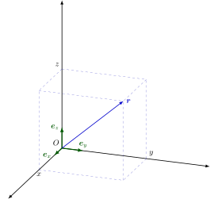
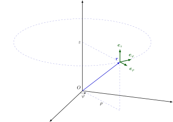
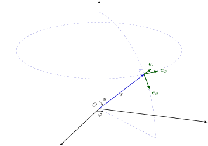

OI Wiki · prijevod · UvodOI Wiki · translation · Introduction
Tablica matematičkih simbolaTable of mathematical symbols
Sadržaj
- Matematička logika
- Teorija skupova
- Standardni skupovi brojeva i intervali
- Relacije
- Elementarna geometrija
- Operacije
- Kombinatorika
- Funkcije
- Eksponencijalne i logaritamske funkcije
- Trigonometrijske i hiperboličke funkcije
- Kompleksni brojevi
- Matrice
- Koordinatni sustavi
- Skalari i vektori
- Specijalne funkcije
Ovaj dokument propisuje preporučeni način pisanja matematičkih simbola na OI Wikiju i daje nekoliko primjera primjene.
Pri sastavljanju su kao predložak poslužile tablice simbola iz GB/T 3102.11-1993, ISO 80000-2:2019 i „Konkretne matematike”, pa je dokument u osnovi usklađen sa sustavom oznaka uobičajenih kineskih udžbenika i s oznakama uvriježenima u OI-ju.
LaTeX zapis simbola potražite u izvornom kodu ovog članka
Matematička logika
| Br. | Simbol, izraz | Značenje, istovjetni izrazi | Napomene i primjeri |
|---|---|---|---|
| n1.1 | \(p \land q\) | konjunkcija \(p\) i \(q\) | \(p\) i \(q\). |
| n1.2 | \(p \lor q\) | disjunkcija \(p\) i \(q\) | \(p\) ili \(q\); „ili” je ovdje uključivo, tj. ako je barem jedna od tvrdnji \(p\), \(q\) istinita, onda je \(p \lor q\) istinito. |
| n1.3 | \(\lnot p\) | negacija \(p\) | ne \(p\). |
| n1.4 | \(p \implies q\) | \(p\) povlači \(q\); ako je \(p\) istinito, onda je \(q\) istinito |
\(q \impliedby p\) i \(p \implies q\) znače isto. |
| n1.5 | \(p \iff q\) | \(p\) je ekvivalentno s \(q\) | \((p \implies q) \land (q \implies p)\) i \(p \iff q\) znače isto. |
| n1.6 | \((\forall~x \in A)~~p(x)\) | za sve \(x\) iz \(A\) tvrdnja \(p(x)\) je istinita | Ako je iz konteksta jasno o kojem je skupu \(A\) riječ, može se pisati \((\forall~x)~~p(x)\). \(\forall\) zove se univerzalni kvantifikator. Značenje \(x \in A\) vidi u n2.1. |
| n1.7 | \((\exists~x \in A)~~p(x)\) | postoji \(x\) iz \(A\) takav da je \(p(x)\) istinito | Ako je iz konteksta jasno o kojem je skupu \(A\) riječ, može se pisati \((\exists~x)~~p(x)\). \(\exists\) zove se egzistencijalni kvantifikator. Značenje \(x \in A\) vidi u n2.1. \((\exists!~x)~~p(x)\) (kvantifikator jedinstvenosti) označava da postoji točno jedan \(x\) takav da je \(p(x)\) istinito. \(\exists!\) može se pisati i \(\exists^1\). |
Teorija skupova
| Br. | Simbol, izraz | Značenje, istovjetni izrazi | Napomene i primjeri |
|---|---|---|---|
| n2.1 | \(x \in A\) | \(x\) pripada \(A\), \(x\) je element skupa \(A\) | \(A \ni x\) i \(x \in A\) znače isto. |
| n2.2 | \(y \notin A\) | \(y\) ne pripada \(A\), \(y\) nije element skupa \(A\) | |
| n2.3 | \(\{x_1, x_2, \dots, x_n\}\) | skup s elementima \(x_1, x_2, \dots, x_n\) | Može se pisati i \(\{x_i ~\vert~ i \in I\}\), gdje je \(I\) skup indeksa. |
| n2.4 | \(\{x \in A ~\vert~ p(x)\}\) | skup svih elemenata iz \(A\) za koje je tvrdnja \(p(x)\) istinita | Na primjer \(\{x \in \textbf{R} ~\vert~ x \geq 5\}\); ako je iz konteksta jasno o kojem je skupu \(A\) riječ, može se pisati \(\{x ~\vert~ p(x)\}\) (npr. kad se promatra samo skup realnih brojeva, može se pisati \(\{x ~\vert~ x \geq 5\}\)) \(\vert\) se može zamijeniti dvotočkom, npr. \(\{x \in A : p(x)\}\). |
| n2.5 | \(\operatorname{card} A\); \(\vert A\vert\); \(\# A\) |
broj elemenata skupa \(A\), kardinalnost skupa \(A\) | |
| n2.6 | \(\varnothing\) | prazan skup | Ne treba koristiti \(\emptyset\). |
| n2.7 | \(B \subseteq A\) | \(B\) je sadržan u \(A\), \(B\) je podskup od \(A\) | Svaki element od \(B\) pripada \(A\). I \(\subset\) se može koristiti u tom značenju, ali vidi napomenu uz n2.8. \(A \supseteq B\) i \(B \subseteq A\) znače isto. |
| n2.8 | \(B \subset A\) | \(B\) je strogo sadržan u \(A\), \(B\) je pravi podskup od \(A\) | Svaki element od \(B\) pripada \(A\) i barem jedan element od \(A\) ne pripada \(B\). Ako \(\subset\) ima značenje iz n2.7, onda za n2.8 treba koristiti simbol \(\subsetneq\). \(A \supset B\) i \(B \subset A\) znače isto. |
| n2.9 | \(A \cup B\) | unija skupova \(A\) i \(B\) | \(A \cup B := \{x ~\vert~ x \in A \lor x \in B\}\); definiciju \(:=\) vidi u n4.3 |
| n2.10 | \(A \cap B\) | presjek skupova \(A\) i \(B\) | \(A \cap B := \{x ~\vert~ x \in A \land x \in B\}\); definiciju \(:=\) vidi u n4.3 |
| n2.11 | \(\displaystyle \bigcup\limits_{i=1}^n A_i\) | unija skupova \(A_1, A_2, \dots, A_n\) | \(\displaystyle \bigcup\limits_{i=1}^n A_i=A_1\cup A_2\cup \dots \cup A_n\); može se koristiti i \(\displaystyle \bigcup\nolimits_{i=1}^n\), \(\displaystyle \bigcup\limits_{i\in I}\), \(\displaystyle \bigcup\nolimits_{i\in I}\), gdje je \(I\) skup indeksa; nadalje, ako je \(P(i)\) neka tvrdnja o \(i\), s \(\displaystyle \bigcup_{P(i)} A_i\) označava se unija svih \(A_i\) za one \(i\) za koje je \(P(i)\) istinito |
| n2.12 | \(\displaystyle \bigcap\limits_{i=1}^n A_i\) | presjek skupova \(A_1, A_2, \dots, A_n\) | \(\displaystyle \bigcap\limits_{i=1}^n A_i=A_1\cap A_2\cap \dots \cap A_n\); može se koristiti i \(\displaystyle \bigcap\nolimits_{i=1}^n\), \(\displaystyle \bigcap\limits_{i\in I}\), \(\displaystyle \bigcap\nolimits_{i\in I}\), gdje je \(I\) skup indeksa; nadalje, ako je \(P(i)\) neka tvrdnja o \(i\), s \(\displaystyle \bigcap_{P(i)} A_i\) označava se presjek svih \(A_i\) za one \(i\) za koje je \(P(i)\) istinito |
| n2.13 | \(A \setminus B\) | razlika skupova \(A\) i \(B\) | \(A \setminus B = \{x ~\vert~ x \in A \land x \notin B\}\); ne treba koristiti \(A - B\); kad je \(B\) podskup od \(A\), može se koristiti i \(\complement_A B\), a ako je iz konteksta jasno o kojem je skupu \(A\) riječ, \(A\) se može izostaviti. Ako nema opasnosti od zabune, komplement skupa \(B\) može se označiti i s \(\overline{B}\). |
| n2.14 | \((a, b)\) | uređeni par \(a\), \(b\); uređena dvojka \(a\), \(b\) |
\((a, b) = (c, d)\) ako i samo ako je \(a = c\) i \(b = d\). |
| n2.15 | \((a_1, a_2, \dots, a_n)\) | uređena \(n\)-torka | Vidi n2.14. |
| n2.16 | \(A \times B\) | Kartezijev produkt skupova \(A\) i \(B\) | \(A \times B = \{(x, y) ~\vert~ x \in A \land y \in B\}\). |
| n2.17 | \(\displaystyle \prod\limits_{i=1}^{n} A_i\) | Kartezijev produkt skupova \(A_1, A_2, \dots, A_n\) | \(\displaystyle \prod\limits_{i=1}^{n} A_i=\{(x_1, x_2, \dots, x_n) ~\vert~ x_1 \in A_1, x_2 \in A_2, \dots, x_n \in A_n\}\); \(A \times A \times \dots \times A\) piše se \(A^n\), gdje je \(n\) broj faktora u produktu; drugu upotrebu ovog simbola vidi u n6.8 |
| n2.18 | \(\mathrm{id}_A\) | dijagonala skupa \(A\times A\) | \(\mathrm{id}_A=\{(x, x)~\vert~x\in A\}\); ako je iz konteksta jasno o kojem je skupu \(A\) riječ, \(A\) se može izostaviti. |
| n2.19 | \(\mathbf{1}_A\) | indikatorska funkcija | \(\mathbf{1}_A(a)=[a\in A]\), definiciju \([\cdot]\) vidi u n6.24. |
| n2.20 | \(\mathcal{P}(A)\); \(2^A\) |
partitivni skup | \(\mathcal{P}(A)=\{S:S\subseteq A\}\) |
Standardni skupovi brojeva i intervali
| Br. | Simbol, izraz | Značenje, istovjetni izrazi | Napomene i primjeri |
|---|---|---|---|
| n3.1 | \(\mathbf{N}\) | skup prirodnih brojeva | \(\mathbf{N} = \{0, 1, 2, 3, \dots\}\); \(\mathbf{N}^* = \mathbf{N}_+ = \{1, 2, 3, \dots\}\); dodatna ograničenja mogu se dodati ovako: \(\mathbf{N}_{> 5} = \{n \in \mathbf{N} ~\vert~ n > 5\}\); može se koristiti i \(\mathbb{N}\). |
| n3.2 | \(\mathbf{Z}\) | skup cijelih brojeva | \(\mathbf{Z}^* = \mathbf{Z}_+ = \{n \in \mathbf{Z} ~\vert~ n \ne 0\}\); dodatna ograničenja mogu se dodati ovako: \(\mathbf{Z}_{> -3} = \{n \in \mathbf{Z} ~\vert~ n > -3\}\); može se koristiti i \(\mathbb{Z}\). |
| n3.3 | \(\mathbf{Q}\) | skup racionalnih brojeva | \(\mathbf{Q}^* = \mathbf{Q}_+ = \{r \in \mathbf{Q} ~\vert~ r \ne 0\}\); dodatna ograničenja mogu se dodati ovako: \(\mathbf{Q}_{< 0} = \{r \in \mathbf{Q} ~\vert~ r < 0\}\); može se koristiti i \(\mathbb{Q}\). |
| n3.4 | \(\mathbf{R}\) | skup realnih brojeva | \(\mathbf{R}^* = \mathbf{R}_+ = \{x \in \mathbf{R} ~\vert~ x \ne 0\}\); dodatna ograničenja mogu se dodati ovako: \(\mathbf{R}_{> 0} = \{x \in \mathbf{R} ~\vert~ x > 0\}\); može se koristiti i \(\mathbb{R}\). |
| n3.5 | \(\mathbf{C}\) | skup kompleksnih brojeva | \(\mathbf{C}^* = \mathbf{C}_+ = \{z \in \mathbf{C} ~\vert~ z \ne 0\}\); može se koristiti i \(\mathbb{C}\). |
| n3.6 | \(\mathbf{P}\) | skup (pozitivnih) prostih brojeva | \(\mathbf{P} = \{2, 3, 5, 7, 11, 13, 17, \dots\}\); može se koristiti i \(\mathbb{P}\). |
| n3.7 | \([a, b]\) | zatvoreni interval od \(a\) do \(b\) | \([a, b] = \{x \in \mathbf{R} ~\vert~ a \leq x \leq b\}\). |
| n3.8 | \((a, b]\) | interval od \(a\) do \(b\) otvoren slijeva i zatvoren zdesna | \((a, b] = \{x \in \mathbf{R} ~\vert~ a < x \leq b\}\); \((-\infty, b] = \{x \in \mathbf{R} ~\vert~ x \leq b\}\). |
| n3.9 | \([a, b)\) | interval od \(a\) do \(b\) zatvoren slijeva i otvoren zdesna | \([a, b) = \{x \in \mathbf{R} ~\vert~ a \leq x < b\}\); \([a, +\infty) = \{x \in \mathbf{R} ~\vert~ a \leq x\}\). |
| n3.10 | \((a, b)\) | otvoreni interval od \(a\) do \(b\) | \((a, b) = \{x \in \mathbf{R} ~\vert~ a < x < b\}\); \((-\infty, b) = \{x \in \mathbf{R} ~\vert~ x < b\}\); \((a, +\infty) = \{x \in \mathbf{R} ~\vert~ a < x\}\). |
Relacije
| Br. | Simbol, izraz | Značenje, istovjetni izrazi | Napomene i primjeri |
|---|---|---|---|
| n4.1 | \(a = b\) | \(a\) je jednako \(b\) | \(\equiv\) se koristi da se naglasi da je neka jednakost identitet drugo značenje ovog simbola vidi u n4.18. |
| n4.2 | \(a \ne b\) | \(a\) nije jednako \(b\) | |
| n4.3 | \(a := b\) | \(a\) se definira kao \(b\) | Vidi n2.9,n2.10 |
| n4.4 | \(a \approx b\) | \(a\) je približno jednako \(b\) | Jednakost nije isključena. |
| n4.5 | \(a \simeq b\) | \(a\) je asimptotski jednako \(b\) | Na primjer: kad \(x\to a\), \(\dfrac{1}{\sin(x-a)} \simeq \dfrac{1}{x-a}\); značenje \(x \to a\) vidi u n4.15. |
| n4.6 | \(a \propto b\) | \(a\) je proporcionalno s \(b\) | Može se koristiti i \(a \sim b\). \(\sim\) se koristi i za relacije ekvivalencije. |
| n4.7 | \(M \cong N\) | \(M\) je sukladno s \(N\) | Kad su \(M\) i \(N\) skupovi točaka (geometrijski likovi). Ovaj se simbol koristi i za izomorfizam algebarskih struktura. |
| n4.8 | \(a < b\) | \(a\) je manje od \(b\) | |
| n4.9 | \(b > a\) | \(b\) je veće od \(a\) | |
| n4.10 | \(a \leq b\) | \(a\) je manje ili jednako \(b\) | |
| n4.11 | \(b \geq a\) | \(b\) je veće ili jednako \(a\) | |
| n4.12 | \(a \ll b\) | \(a\) je mnogo manje od \(b\) | |
| n4.13 | \(b \gg a\) | \(b\) je mnogo veće od \(a\) | |
| n4.14 | \(\infty\) | beskonačnost | Ovaj simbol nije broj. Mogu se koristiti i \(+\infty\), \(-\infty\). |
| n4.15 | \(x \to a\) | \(x\) teži prema \(a\) | Obično se pojavljuje u izrazima s limesom. \(a\) može biti i \(\infty\), \(+\infty\), \(-\infty\). |
| n4.16 | \(m \mid n\) | \(m\) dijeli \(n\) | Za cijele brojeve \(m\), \(n\): \((\exists~k \in \mathbf{Z})~~m\cdot k = n\). |
| n4.17 | \(m \perp n\) | \(m\) i \(n\) su relativno prosti | Za cijele brojeve \(m\), \(n\): \((\nexists~k \in \mathbf{Z}_{>1})~~(k \mid m) \land (k \mid n)\); drugu upotrebu ovog simbola vidi u n5.2 |
| n4.18 | \(n \equiv k \pmod m\) | \(n\) je kongruentno \(k\) modulo \(m\) | Za cijele brojeve \(n\), \(k\), \(m\): \(m \mid (n - k)\); ne miješati sa značenjem iz n4.1. |
Elementarna geometrija
| Br. | Simbol, izraz | Značenje, istovjetni izrazi | Napomene i primjeri |
|---|---|---|---|
| n5.1 | \(\parallel\) | paralelno | |
| n5.2 | \(\perp\) | okomito | drugu upotrebu ovog simbola vidi u n4.17 |
| n5.3 | \(\angle\) | (ravninski) kut | |
| n5.4 | \(\overline{\mathrm{AB}}\) | dužina \(\mathrm{AB}\) | |
| n5.5 | \(\overrightarrow{\mathrm{AB}}\) | usmjerena dužina \(\mathrm{AB}\) | |
| n5.6 | \(d(\mathrm{A}, \mathrm{B})\) | udaljenost između točaka \(\mathrm{A}\) i \(\mathrm{B}\) | tj. duljina dužine \(\overline{\mathrm{AB}}\). |
Operacije
| Br. | Simbol, izraz | Značenje, istovjetni izrazi | Napomene i primjeri |
|---|---|---|---|
| n6.1 | \(a + b\) | \(a\) plus \(b\) | |
| n6.2 | \(a - b\) | \(a\) minus \(b\) | |
| n6.3 | \(a \pm b\) | \(a\) plus ili minus \(b\) | |
| n6.4 | \(a \mp b\) | \(a\) minus ili plus \(b\) | \(-(a \pm b) = -a \mp b\). |
| n6.5 | \(a \cdot b\); \(a \times b\); \(ab\) |
\(a\) puta \(b\) | Ako se pojavljuje decimalna točka, treba koristiti samo \(\times\); neke primjere upotrebe vidi u n2.16,n2.17,n14.11,n14.12 |
| n6.6 | \(\dfrac{a}{b}\); \(a/b\); \(a:b\) |
\(a\) podijeljeno s \(b\) | \(\dfrac{a}{b}=a\cdot b^{-1}\); \(:\) se može koristiti za omjer brojčanih vrijednosti iste dimenzije. Ne treba koristiti \(÷\). |
| n6.7 | \(\displaystyle \sum\limits_{i=1}^n a_i\) | \(a_1 + a_2 + \dots + a_n\) | Može se koristiti i \(\displaystyle \sum\nolimits_{i=1}^n a_i\), \(\displaystyle \sum\limits_i a_i\), \(\displaystyle \sum\nolimits_i a_i\), \(\displaystyle \sum a_i\); ako je \(P(i)\) neka tvrdnja o \(i\), s \(\displaystyle \sum_{P(i)} a_i\) označava se zbroj svih \(a_i\) za one \(i\) za koje je \(P(i)\) istinito. |
| n6.8 | \(\displaystyle \prod\limits_{i=1}^n a_i\) | \(a_1 \cdot a_2 \cdot \dots \cdot a_n\) | Može se koristiti i \(\displaystyle \prod\nolimits_{i=1}^n a_i\), \(\displaystyle \prod\limits_i a_i\), \(\displaystyle \prod\nolimits_i a_i\), \(\displaystyle \prod a_i\); ako je \(P(i)\) neka tvrdnja o \(i\), s \(\displaystyle \prod_{P(i)} a_i\) označava se umnožak svih \(a_i\) za one \(i\) za koje je \(P(i)\) istinito; drugu upotrebu ovog simbola vidi u n2.17 |
| n6.9 | \(a^p\) | \(p\)-ta potencija od \(a\) | |
| n6.10 | \(a^{1/2}\); \(\sqrt{a}\) |
\(a\) na \(1/2\), drugi korijen iz \(a\) | Treba izbjegavati \(\sqrt{}a\). |
| n6.11 | \(a^{1/n}\); \(\sqrt[n]{a}\) |
\(a\) na \(1/n\), \(n\)-ti korijen iz \(a\) | Treba izbjegavati \(\sqrt[n]{}a\). |
| n6.12 | \(\bar{x}\); \(\bar{x}_a\) |
aritmetička sredina od \(x\) | Ostale sredine: harmonijska sredina \(\bar{x}_h\); geometrijska sredina \(\bar{x}_g\); kvadratna sredina / korijen srednjeg kvadrata \(\bar{x}_q\) ili \(\bar{x}_{rms}\). \(\bar{x}\) označava i konjugirano kompleksni broj od \(x\), vidi n11.6. |
| n6.13 | \(\operatorname{sgn} a\) | funkcija predznaka od \(a\) | Za realan broj \(a\): \(\operatorname{sgn} a=1\quad (a>0)\); \(\operatorname{sgn} a=-1\quad (a<0)\); \(\operatorname{sgn} 0=0\); vidi n11.7. |
| n6.14 | \(\inf M\) | infimum skupa \(M\) | Najveća donja međa nepraznog skupa \(M\). |
| n6.15 | \(\sup M\) | supremum skupa \(M\) | Najmanja gornja međa nepraznog skupa \(M\). |
| n6.16 | \(\lvert a\rvert\) | apsolutna vrijednost od \(a\) | Može se koristiti i \(\operatorname{abs} a\). |
| n6.17 | \(\lfloor a\rfloor\) | zaokruživanje nadolje (pod) najveći cijeli broj manji ili jednak realnom broju \(a\) |
Na primjer: \(\lfloor 2.4\rfloor = 2\); \(\lfloor -2.4\rfloor = -3\). |
| n6.18 | \(\lceil a\rceil\) | zaokruživanje nagore (strop) najmanji cijeli broj veći ili jednak realnom broju \(a\) |
Na primjer: \(\lceil 2.4\rceil = 3\); \(\lceil -2.4\rceil = -2\). |
| n6.19 | \(\min(a, b)\); \(\min\{a, b\}\) |
minimum od \(a\) i \(b\) | Može se poopćiti na konačne skupove. Za minimum beskonačnog skupa preporučuje se \(\inf\), vidi n6.14 |
| n6.20 | \(\max(a, b)\); \(\max\{a, b\}\) |
maksimum od \(a\) i \(b\) | Može se poopćiti na konačne skupove. Za maksimum beskonačnog skupa preporučuje se \(\sup\), vidi n6.15 |
| n6.21 | \(n \bmod m\) | ostatak pri dijeljenju \(n\) s \(m\) | Za pozitivne cijele brojeve \(n\), \(m\): \((\exists~q\in\mathbf{N}, r\in[0, m))~~n=qm+r\); pri čemu je \(r=n \bmod m\). |
| n6.22 | \(\gcd(a, b)\); \(\gcd\{a, b\}\) |
najveći zajednički djelitelj cijelih brojeva \(a\) i \(b\) | Može se poopćiti na konačne skupove. Ako nema opasnosti od zabune, može se pisati \((a, b)\). |
| n6.23 | \(\operatorname{lcm}(a, b)\); \(\operatorname{lcm}\{a, b\}\) |
najmanji zajednički višekratnik cijelih brojeva \(a\) i \(b\) | Može se poopćiti na konačne skupove. Ako nema opasnosti od zabune, može se pisati \([a, b]\); \((a, b)[a, b]=\lvert ab\rvert\). |
| n6.24 | \([P]\) | Iversonova zagrada | Ako je tvrdnja \(P\) istinita, onda je \([P]=1\), inače je \([P]=0\). |
| n6.25 | \(a\uparrow b\); \(a\uparrow^{n} b\) |
Knuthova strelica | Za nenegativne cijele brojeve \(a,b,n\): \(a\uparrow^{n} b=a~\underbrace{\uparrow\dots\uparrow}_{n \text{ times}}~b\); \(a\uparrow^{0} b=ab\); \(a\uparrow^{1} b=a\uparrow b=a^b\); \(a\uparrow^{n} 0=1\quad(n>0)\); \(a\uparrow^{n}b=a\uparrow^{n-1}(a\uparrow^{n}(b-1))\). |
| n6.26 | \([x^n]f(x)\) | koeficijent uz \(x^n\) u polinomu / formalnom redu potencija / formalnom Laurentovom redu \(f(x)\) | Ako je \(\displaystyle f(x)=\sum_{i} a_ix^i\), onda je \([x^n]f(x)=a_n\); može se poopćiti na više varijabli, npr. ako je \(\displaystyle f(x,y)=\sum_{i,j}a_{i,j}x^iy^j\), onda je \([x^ny^m]f(x,y)=a_{n,m}\). |
Kombinatorika
U ovom odjeljku \(n\) i \(k\) su prirodni brojevi, \(a\) je kompleksan broj i \(k\leq n\).
| Br. | Simbol, izraz | Značenje, istovjetni izrazi | Napomene i primjeri |
|---|---|---|---|
| n7.1 | \(n!\) | faktorijel | \(n!=\prod_{k=1}^n k=1\cdot 2\cdot 3\cdot \dots \cdot n\quad (n>0)\); \(0!=1\). |
| n7.2 | \(a^{\underline{k}}\); \((a)_{-k}\) |
padajuća faktorijelna potencija | \(a^{\underline{k}}=a\cdot(a-1)\cdot \dots \cdot(a-k+1)\quad (k>0)\); \(a^{\underline{0}}=1\); \(n^{\underline{k}}=\dfrac{n!}{(n-k)!}\). |
| n7.3 | \(a^{\overline{k}}\); \((a)_{+k}\) |
rastuća faktorijelna potencija | \(a^{\overline{k}}=a\cdot(a+1)\cdot \dots \cdot(a+k-1)\quad (k>0)\); \(a^{\overline{0}}=1\); \(n^{\overline{k}}=\dfrac{(n+k-1)!}{(n-1)!}\). |
| n7.4 | \(\dbinom{n}{k}\) | binomni koeficijent | \(\dbinom{n}{k}=\dfrac{n!}{k!(n-k)!}\). |
| n7.5 | \(\displaystyle{n\brack k}\) | Stirlingov broj prve vrste | \(\displaystyle{n+1\brack k}=n{n\brack k}+{n\brack k-1}\); \(\displaystyle x^{\overline{n}}=\sum_{k=0}^n{n\brack k}x^k\). |
| n7.6 | \(\displaystyle{n\brace k}\) | Stirlingov broj druge vrste | \(\displaystyle{n\brace k}=\frac{1}{k!}\sum_{i=0}^k(-1)^i\binom{k}{i}(k-i)^n\); \(\displaystyle\sum_{k=0}^n{n\brace k}x^{\underline{k}}=x^n\). |
Funkcije
| Br. | Simbol, izraz | Značenje, istovjetni izrazi | Napomene i primjeri |
|---|---|---|---|
| n8.1 | \(f\) | funkcija | |
| n8.2 | \(f(x)\), \(f(x_1, \dots, x_n)\) | vrijednost funkcije \(f\) u \(x\) vrijednost funkcije \(f\) u \((x_1, \dots, x_n)\) |
|
| n8.3 | \(\operatorname{dom} f\) | domena od \(f\) | Može se koristiti i \(\mathrm{D}(f)\). |
| n8.4 | \(\operatorname{ran} f\) | slika (skup vrijednosti) od \(f\) | Može se koristiti i \(\mathrm{R}(f)\). |
| n8.5 | \(f:A\to B\) | \(f\) je preslikavanje iz \(A\) u \(B\) | \(\operatorname{dom} f=A\) i \((\forall~x \in\operatorname{dom} f)~~ f(x) \in B\). |
| n8.6 | \(x\mapsto T(x), x\in A\) | funkcija koja svaki \(x\in A\) preslikava u \(T(x)\) | \(T(x)\) služi samo za definiciju i označava vrijednost neke funkcije s argumentom \(x\in A\). Ako je ta funkcija \(f\), onda za sve \(x\in A\) vrijedi \(f(x)=T(x)\). Stoga se \(T(x)\) obično koristi za definiranje funkcije \(f\). Na primjer: \(x\mapsto 3x^2y, x\in[0, 2]\); to je kvadratna funkcija od \(x\) definirana izrazom \(3x^2y\). Ako nije uveden simbol funkcije, funkcija se označava s \(3x^2y\) |
| n8.7 | \(f^{-1}\) | inverzna funkcija od \(f\) | Inverzna funkcija \(f^{-1}\) funkcije \(f\) definirana je ako i samo ako je \(f\) injekcija. Ako je \(f\) injekcija, onda je \(\operatorname{dom}\left(f^{-1}\right) = \operatorname{ran} f\), \(\operatorname{ran}\left(f^{-1}\right) = \operatorname{dom} f\) i \((\forall~x\in\operatorname{dom} f)~~f^{-1}(f(x)) = x\). Ne miješati s recipročnom vrijednošću funkcije \(f(x)^{-1}\). |
| n8.8 | \(g\circ f\) | kompozicija funkcija \(f\) i \(g\) | \((g\circ f)(x)=g(f(x))\). |
| n8.9 | \(f:x\mapsto y\) | \(f(x)=y\), \(f\) preslikava \(x\) u \(y\) | |
| n8.10 | \(f\vert_a^b\); \(f(\dots, u, \dots)\vert_{u=a}^{u=b}\) |
\(f(b)-f(a)\); \(f(\dots, b, \dots)-f(\dots, a, \dots)\) |
Koristi se uglavnom pri računanju određenih integrala. |
| n8.11 | \(\displaystyle \lim\limits_{x\to a}f(x)\); \(\lim\nolimits_{x\to a}f(x)\) |
limes od \(f(x)\) kad \(x\) teži prema \(a\) | \(\lim\nolimits_{x\to a}f(x)=b\) može se pisati \(f(x)\to b\quad (x \to a)\). Oznake za desni i lijevi limes su redom \(\lim\nolimits_{x\to a+}f(x)\) i \(\lim\nolimits_{x\to a-}f(x)\). |
| n8.12 | \(f(x) = O(g(x))\) | \(\lvert f(x)/g(x)\rvert\) je ograničeno u granicama koje podrazumijeva kontekst, red od \(f(x)\) nije viši od reda od \(g(x)\) | Kad su i \(f/g\) i \(g/f\) ograničeni, kaže se da su \(f\) i \(g\) istog reda. Simbol „\(=\)” koristi se iz povijesnih razloga; ovdje ne označava ekvivalenciju jer nije tranzitivan. Na primjer: \(\sin x=O(x)\quad (x\to 0)\). |
| n8.13 | \(f(x) = o(g(x))\) | u granicama koje podrazumijeva kontekst vrijedi \(f(x)/g(x)\to 0\), red od \(f(x)\) viši je od reda od \(g(x)\) | Simbol „\(=\)” koristi se iz povijesnih razloga; ovdje ne označava ekvivalenciju jer nije tranzitivan. Na primjer: \(\cos x=1+o(x)\quad (x\to 0)\). |
| n8.14 | \(\Delta f\) | konačni prirast od \(f\) | Razlika dviju vrijednosti funkcije koje podrazumijeva kontekst. Na primjer: \(\Delta x=x_2-x_1\); \(\Delta f(x)=f(x_2)-f(x_1)\). |
| n8.15 | \(\dfrac{\mathrm{d}f}{\mathrm{d}x}\); \(f'\) |
derivacija od \(f\) po \(x\) | Samo za funkcije jedne varijable. Nezavisna varijabla može se izričito navesti, npr. \(\dfrac{\mathrm{d}f(x)}{\mathrm{d}x}\), \(f'(x)\). |
| n8.16 | \(\left(\dfrac{\mathrm{d}f}{\mathrm{d}x}\right)_{x=a}\); \(f'(a)\) |
vrijednost derivacije od \(f\) u \(a\) | Vidi n8.15 |
| n8.17 | \(\dfrac{\mathrm{d}^n f}{\mathrm{d}x^n}\); \(f^{(n)}\) |
\(n\)-ta derivacija od \(f\) po \(x\) | Samo za funkcije jedne varijable. Nezavisna varijabla može se izričito navesti, npr. \(\dfrac{\mathrm{d}^n f(x)}{\mathrm{d}x^n}\), \(f^{(n)}(x)\). \(f''\) i \(f'''\) mogu se koristiti za \(f^{(2)}\) odnosno \(f^{(3)}\). |
| n8.18 | \(\dfrac{\partial f}{\partial x}\); \(f_x\) |
parcijalna derivacija od \(f\) po \(x\) | Samo za funkcije više varijabli. Nezavisna varijabla može se izričito navesti, npr. \(\dfrac{\partial f(x, y, \dots)}{\partial x}\), \(f_x(x, y, \dots)\). Može se proširiti na više redove, npr. \(f_{xx}=\dfrac{\partial^2 f}{\partial x^2}=\dfrac{\partial}{\partial x}\left(\dfrac{\partial f}{\partial x}\right)\); \(f_{xy}=\dfrac{\partial^2 f}{\partial y\partial x}=\dfrac{\partial}{\partial y}\left(\dfrac{\partial f}{\partial x}\right)\). |
| n8.19 | \(\dfrac{\partial(f_1, \dots, f_m)}{\partial(x_1, \dots, x_n)}\) | Jacobijeva matrica | vidi1 |
| n8.20 | \(\mathrm{d}f\) | totalni diferencijal od \(f\) | \(\mathrm{d}f(x, y, \dots)=\dfrac{\partial f}{\partial x}\mathrm{d}x+\dfrac{\partial f}{\partial y}\mathrm{d}y+\dots\). |
| n8.21 | \(\delta f\) | (infinitezimalna) varijacija od \(f\) | |
| n8.22 | \(\displaystyle \int f(x)\mathrm{d}x\) | neodređeni integral od \(f\) | |
| n8.23 | \(\displaystyle \int\limits_a^b f(x)\mathrm{d}x\) | određeni integral od \(f\) od \(a\) do \(b\) | Može se koristiti i \(\displaystyle \int\nolimits_a^b f(x)\mathrm{d}x\); određeni integral može se definirati i na općenitijim područjima. Npr. \(\displaystyle\int\limits_C\), \(\displaystyle\int\limits_S\), \(\displaystyle\int\limits_V\), \(\displaystyle\oint\) označavaju redom određeni integral po krivulji \(C\), plohi \(S\), trodimenzionalnom području \(V\) te po zatvorenoj krivulji ili plohi. Višestruki integrali mogu se pisati \(\displaystyle\iint\), \(\displaystyle\iiint\) itd. |
| n8.24 | \(f*g\) | konvolucija funkcija \(f\) i \(g\) | \(\displaystyle (f*g)(x)=\int\limits_{-\infty}^{\infty}f(y)g(x-y)\mathrm{d}y\). |
Eksponencijalne i logaritamske funkcije
\(x\) može biti kompleksan broj.
| Br. | Simbol, izraz | Značenje, istovjetni izrazi | Napomene i primjeri |
|---|---|---|---|
| n9.1 | \(\mathrm{e}\) | baza prirodnog logaritma | \(\displaystyle \mathrm{e}=\lim\limits_{n\to\infty}\left(1+\frac{1}{n}\right)^n=2.718~281~8\dots\); ne pisati \(e\). |
| n9.2 | \(a^x\) | eksponencijalna funkcija od \(x\) (s bazom \(a\)) | Vidi n6.9. |
| n9.3 | \(\mathrm{e}^x\); \(\exp x\) |
eksponencijalna funkcija od \(x\) (s bazom \(\mathrm{e}\)) | |
| n9.4 | \(\log_a x\) | logaritam od \(x\) po bazi \(a\) | Kad bazu nije potrebno navesti, može se koristiti \(\log x\). \(\log x\) ne treba koristiti umjesto bilo kojeg od \(\ln x\), \(\lg x\), \(\operatorname{lb} x\). |
| n9.5 | \(\ln x\) | prirodni logaritam od \(x\) | \(\ln x = \log_{\mathrm{e}} x\); vidi n9.4. |
| n9.6 | \(\lg x\) | dekadski logaritam od \(x\) | \(\lg x = \log_{10} x\); vidi n9.4. |
| n9.7 | \(\operatorname{lb} x\) | logaritam od \(x\) po bazi \(2\) | \(\operatorname{lb} x = \log_2 x\); vidi n9.4. |
Trigonometrijske i hiperboličke funkcije
| Br. | Simbol, izraz | Značenje, istovjetni izrazi | Napomene i primjeri |
|---|---|---|---|
| n10.1 | \(\pi\) | broj pi (omjer opsega i promjera kruga) | \(\pi = 3.141~592~6\dots\). |
| n10.2 | \(\sin x\) | sinus od \(x\) | \(\sin x=\dfrac{\mathrm{e}^{\mathrm{i}x}-\mathrm{e}^{-\mathrm{i}x}}{2\mathrm{i}}\); \((\sin x)^n\), \((\cos x)^n\)(\(n\geq 2\)) itd. obično se pišu \(\sin^n x\), \(\cos^n x\) itd. |
| n10.3 | \(\cos x\) | kosinus od \(x\) | \(\cos x = \sin(x + \pi/2)\). |
| n10.4 | \(\tan x\) | tangens od \(x\) | \(\tan x = \sin x/\cos x\); ne smije se koristiti \(\operatorname{tg} x\). |
| n10.5 | \(\cot x\) | kotangens od \(x\) | \(\cot x = 1/\tan x\); ne smije se koristiti \(\operatorname{ctg} x\). |
| n10.6 | \(\sec x\) | sekans od \(x\) | \(\sec x = 1/\cos x\). |
| n10.7 | \(\csc x\) | kosekans od \(x\) | \(\csc x = 1/\sin x\); ne smije se koristiti \(\operatorname{cosec} x\). |
| n10.8 | \(\arcsin x\) | arkus sinus od \(x\) | \(y = \arcsin x \iff x = \sin y\quad (-\pi/2 \leq y \leq \pi/2)\). |
| n10.9 | \(\arccos x\) | arkus kosinus od \(x\) | \(y = \arccos x \iff x = \cos y\quad (0 \leq y \leq \pi)\). |
| n10.10 | \(\arctan x\) | arkus tangens od \(x\) | \(y = \arctan x \iff x = \tan y\quad (-\pi/2 \leq y \leq \pi/2)\); ne smije se koristiti \(\operatorname{arctg} x\). |
| n10.11 | \(\operatorname{arccot} x\) | arkus kotangens od \(x\) | \(y = \operatorname{arccot} x \iff x = \cot y\quad (0 \leq y \leq \pi)\); ne smije se koristiti \(\operatorname{arcctg} x\). |
| n10.12 | \(\operatorname{arcsec} x\) | arkus sekans od \(x\) | \(y = \operatorname{arcsec} x \iff x = \sec y\quad (0\leq y \leq \pi, y\ne \pi/2)\). |
| n10.13 | \(\operatorname{arccsc} x\) | arkus kosekans od \(x\) | \(y = \operatorname{arccsc} x \iff x = \csc y\quad (-\pi/2 \leq y \leq \pi/2, y\ne 0)\); ne smije se koristiti \(\operatorname{arccosec} x\). |
| n10.14 | \(\sinh x\) | hiperbolni sinus od \(x\) | \(\sinh x=\dfrac{\mathrm{e}^x-\mathrm{e}^{-x}}{2}\); ne smije se koristiti \(\operatorname{sh} x\). |
| n10.15 | \(\cosh x\) | hiperbolni kosinus od \(x\) | \(\cosh^2 x = \sinh^2 x + 1\); ne smije se koristiti \(\operatorname{ch} x\). |
| n10.16 | \(\tanh x\) | hiperbolni tangens od \(x\) | \(\tanh x = \sinh x/\cosh x\); ne smije se koristiti \(\operatorname{th} x\). |
| n10.17 | \(\coth x\) | hiperbolni kotangens od \(x\) | \(\coth x = 1/\tanh x\). |
| n10.18 | \(\operatorname{sech} x\) | hiperbolni sekans od \(x\) | \(\operatorname{sech} x = 1/\cosh x\). |
| n10.19 | \(\operatorname{csch} x\) | hiperbolni kosekans od \(x\) | \(\operatorname{csch} x = 1/\sinh x\); ne smije se koristiti \(\operatorname{cosech} x\). |
| n10.20 | \(\operatorname{arsinh} x\) | inverzni hiperbolni sinus od \(x\) | \(y = \operatorname{arsinh} x \iff x = \sinh y\); ne smije se koristiti \(\operatorname{arsh} x\). |
| n10.21 | \(\operatorname{arcosh} x\) | inverzni hiperbolni kosinus od \(x\) | \(y = \operatorname{arcosh} x \iff x = \cosh y\quad (y \geq 0)\); ne smije se koristiti \(\operatorname{arch} x\). |
| n10.22 | \(\operatorname{artanh} x\) | inverzni hiperbolni tangens od \(x\) | \(y = \operatorname{artanh} x \iff x = \tanh y\); ne smije se koristiti \(\operatorname{arth} x\). |
| n10.23 | \(\operatorname{arcoth} x\) | inverzni hiperbolni kotangens od \(x\) | \(y = \operatorname{arcoth} x \iff x = \coth y\quad (y \ne 0)\). |
| n10.24 | \(\operatorname{arsech} x\) | inverzni hiperbolni sekans od \(x\) | \(y = \operatorname{arsech} x \iff x = \operatorname{sech} y\quad (y \geq 0)\). |
| n10.25 | \(\operatorname{arcsch} x\) | inverzni hiperbolni kosekans od \(x\) | \(y = \operatorname{arcsch} x \iff x = \operatorname{csch} y\quad (y \geq 0)\); ne smije se koristiti \(\operatorname{arcosech} x\). |
Kompleksni brojevi
| Br. | Simbol, izraz | Značenje, istovjetni izrazi | Napomene i primjeri |
|---|---|---|---|
| n11.1 | \(\mathrm{i}\) | imaginarna jedinica | \(\mathrm{i}^2 = -1\); ne smije se koristiti \(i\) ni i |
| n11.2 | \(\operatorname{Re} z\) | realni dio od \(z\) | Vidi n11.3. |
| n11.3 | \(\operatorname{Im} z\) | imaginarni dio od \(z\) | Ako je \(z = x + \mathrm{i} y\quad (x, y\in\mathbf{R})\), onda je \(x = \operatorname{Re} z\), \(y = \operatorname{Im} z\). |
| n11.4 | \(\lvert z\rvert\) | modul od \(z\) | \(\lvert z\rvert=\sqrt{(\operatorname{Re} z)^2+(\operatorname{Im} z)^2}\). |
| n11.5 | \(\arg z\) | argument od \(z\) | Ako je \(z = r \mathrm{e}^{\mathrm{i}\varphi}\), gdje je \(r = \lvert z\rvert\) i \(-\pi < \varphi \leq \pi\), onda je \(\varphi = \arg z\). \(\operatorname{Re} z = r \cos \varphi\), \(\operatorname{Im} z = r \sin \varphi\). |
| n11.6 | \(\bar{z}\); \(z^*\) |
kompleksno konjugirani broj od \(z\) | \(\bar{z}=\operatorname{Re}z-\mathrm{i}\operatorname{Im}z\). |
| n11.7 | \(\operatorname{sgn} z\) | funkcija jediničnog modula od \(z\) | \(\operatorname{sgn} z =z / \lvert z\rvert = \exp(\mathrm{i} \arg z)\quad (z \ne 0)\); \(\operatorname{sgn} 0 = 0\); vidi n6.13. |
Matrice
| Br. | Simbol, izraz | Značenje, istovjetni izrazi | Napomene i primjeri |
|---|---|---|---|
| n12.1 | \(A\); vidi2 |
matrica \(A\) tipa \(m\times n\) | \(a_{ij} = (A)_{ij}\); može se koristiti i \(A = (a_{ij})\). Pritom je \(m\) broj redaka, a \(n\) broj stupaca kad je \(m=n\), matrica se zove kvadratna umjesto okruglih zagrada mogu se koristiti uglate. |
| n12.2 | \(A + B\) | zbroj matrica \(A\) i \(B\) | \((A + B)_{ij} = (A)_{ij} + (B)_{ij}\); matrice \(A\) i \(B\) moraju imati jednak broj redaka i jednak broj stupaca. |
| n12.3 | \(x A\) | umnožak skalara \(x\) i matrice \(A\) | \((x A)_{ij} = x (A)_{ij}\). |
| n12.4 | \(AB\) | umnožak matrica \(A\) i \(B\) | \(\displaystyle(AB)_{ik} = \sum\limits_{j}(A)_{ij}(B)_{jk}\); broj stupaca matrice \(A\) mora biti jednak broju redaka matrice \(B\). |
| n12.5 | \(I\); \(E\) |
jedinična matrica | \((I)_{ik} = \delta_{ik}\); definiciju \(\delta_{ik}\) vidi u n14.9. |
| n12.6 | \(A^{-1}\) | inverz kvadratne matrice \(A\) | \(AA^{-1} = A^{-1}A = I\quad (\det A \ne 0)\). Definiciju \(\det A\) vidi u n12.10. |
| n12.7 | \(A^{\mathrm{T}}\); \(A'\) |
transponirana matrica od \(A\) | \((A^{\mathrm{T}})_{ik} = (A)_{ki}\). |
| n12.8 | \(\overline{A}\); \(A^*\) |
kompleksno konjugirana matrica od \(A\) | \(\left(\overline{A}\right)_{ik}=\overline{(A)_{ik}}\). |
| n12.9 | \(A^{\mathrm{H}}\); \(A^{\dagger}\) |
hermitski konjugirana matrica od \(A\) | \(A^{\mathrm{H}} = \left(\overline{A}\right)^{\mathrm{T}}\). |
| n12.10 | \(\det A\); vidi3 |
determinanta kvadratne matrice \(A\) | Može se koristiti i \(\lvert A\rvert\). |
| n12.11 | \(\operatorname{rank}A\) | rang matrice \(A\) | |
| n12.12 | \(\operatorname{tr}A\) | trag kvadratne matrice \(A\) | \(\displaystyle\operatorname{tr}A=\sum\limits_{i}(A)_{ii}\). |
| n12.13 | \(\lVert A\rVert\) | norma matrice \(A\) | Zadovoljava nejednakost trokuta: ako je \(A + B = C\), onda je \(\lVert A\rVert+\lVert B\rVert \geq \lVert C\rVert\). |
Koordinatni sustavi
U ovom odjeljku razmatraju se neki koordinatni sustavi u trodimenzionalnom prostoru. Točka \(\mathrm{O}\) je ishodište koordinatnog sustava. Svaka točka \(\mathrm{P}\) određena je vektorom položaja od ishodišta \(\mathrm{O}\) do točke \(\mathrm{P}\).
| Br. | Koordinate | Vektor položaja i njegov diferencijal | Naziv koordinata | Napomene |
|---|---|---|---|---|
| n13.1 | \(x\), \(y\), \(z\) | \(\boldsymbol{r} = x \boldsymbol{e}_x + y \boldsymbol{e}_y + z \boldsymbol{e}_z\); \(\mathrm{d}\boldsymbol{r} = \mathrm{d}x~\boldsymbol{e}_x + \mathrm{d}y~\boldsymbol{e}_y + \mathrm{d}z~\boldsymbol{e}_z\) |
Kartezijeve koordinate | Bazni vektori \(\boldsymbol{e}_x\), \(\boldsymbol{e}_y\), \(\boldsymbol{e}_z\) čine desni ortogonalni sustav, vidi sliku 1 i sliku 4. Bazni vektori mogu se označiti i s \(\boldsymbol{e}_1\), \(\boldsymbol{e}_2\), \(\boldsymbol{e}_3\) ili \(\boldsymbol{i}\), \(\boldsymbol{j}\), \(\boldsymbol{k}\), a koordinate s \(x_1\), \(x_2\), \(x_3\) ili \(i\), \(j\), \(k\). |
| n13.2 | \(\rho\), \(\varphi\), \(z\) | \(\boldsymbol{r} = \rho~\boldsymbol{e}_{\rho} + z~\boldsymbol{e}_z\); \(\mathrm{d}\boldsymbol{r} = \mathrm{d}\rho~\boldsymbol{e}_{\rho} +\rho~\mathrm{d}\varphi~\boldsymbol{e}_{\varphi} + \mathrm{d}z~\boldsymbol{e}_z\) |
cilindrične koordinate | \(\boldsymbol{e}_{\rho}(\varphi)\), \(\boldsymbol{e}_{\varphi}(\varphi)\), \(\boldsymbol{e}_z\) čine desni ortogonalni sustav, vidi sliku 2. Ako je \(z = 0\), onda su \(\rho\) i \(\varphi\) polarne koordinate u ravnini. |
| n13.3 | \(r\), \(\vartheta\), \(\varphi\) | \(\boldsymbol{r} = r \boldsymbol{e}_r\); \(\mathrm{d}\boldsymbol{r} = \mathrm{d}r~\boldsymbol{e}_r + r~\mathrm{d}\vartheta~\boldsymbol{e}_{\vartheta} + r~\sin\vartheta~\mathrm{\mathrm{d}}\varphi~\boldsymbol{e}_{\varphi}\) |
sferne koordinate | \(\boldsymbol{e}_r(\vartheta, \varphi)\), \(\boldsymbol{e}_{\vartheta}(\vartheta, \varphi)\), \(\boldsymbol{e}_{\varphi}(\varphi)\) čine desni ortogonalni sustav, vidi sliku 3. |
Ako se umjesto desnog koordinatnog sustava koristi lijevi koordinatni sustav, to treba unaprijed jasno naglasiti kako ne bi došlo do pogrešne upotrebe simbola.

Slika 1 Desni Kartezijev koordinatni sustav

Slika 2 Desni cilindrični koordinatni sustav

Slika 3 Desni sferni koordinatni sustav
Slika 4 Desni koordinatni sustav
Slika 5 Lijevi koordinatni sustav
Skalari i vektori
U ovom odjeljku bazni vektori označavaju se s \(\boldsymbol{e}_1\), \(\boldsymbol{e}_2\), \(\boldsymbol{e}_3\). Mnogi pojmovi iz ovog odjeljka mogu se poopćiti na \(n\)-dimenzionalni prostor.
Skalari i vektori sami po sebi ne ovise o izboru koordinatnog sustava, dok skalarne komponente vektora ovise o izboru koordinatnog sustava.
Za bazne vektore \(\boldsymbol{e}_1\), \(\boldsymbol{e}_2\), \(\boldsymbol{e}_3\) svaki se vektor \(\boldsymbol{a}\) može zapisati kao \(\boldsymbol{a}=a_1\boldsymbol{e}_1+a_2\boldsymbol{e}_2+a_3\boldsymbol{e}_3\), gdje su \(a_1\), \(a_2\) i \(a_3\) jednoznačno određeni skalari koji se zovu „koordinate” vektora u odnosu na tu bazu, a \(a_1\boldsymbol{e}_1\), \(a_2\boldsymbol{e}_2\) i \(a_3\boldsymbol{e}_3\) zovu se komponentni vektori u odnosu na tu bazu.
U ovom odjeljku razmatraju se samo Kartezijeve (ortogonalne) koordinate običnog prostora. Kartezijeve koordinate označavaju se s \(x\), \(y\), \(z\) ili \(a_1\), \(a_2\), \(a_3\) ili \(x_1\), \(x_2\), \(x_3\).
Svi indeksi \(i\), \(j\), \(k\) u ovom odjeljku idu od \(1\) do \(3\).
| Br. | Simbol, izraz | Značenje, istovjetni izrazi | Napomene i primjeri |
|---|---|---|---|
| n14.1 | \(\boldsymbol{a}\); \(\vec{a}\) |
vektor \(\boldsymbol{a}\) | |
| n14.2 | \(\boldsymbol{a} + \boldsymbol{b}\) | zbroj vektora \(\boldsymbol{a}\) i \(\boldsymbol{b}\) | \((\boldsymbol{a} + \boldsymbol{b})_i = a_i + b_i\). |
| n14.3 | \(x\boldsymbol{a}\) | umnožak skalara \(x\) i vektora \(\boldsymbol{a}\) | \((x\boldsymbol{a})_i = xa_i\). |
| n14.4 | \(\lvert \boldsymbol{a}\rvert\) | duljina vektora \(\boldsymbol{a}\), norma vektora \(\boldsymbol{a}\) | \(\lvert \boldsymbol{a}\rvert=\sqrt{a_x^2+a_y^2+a_z^2}\); može se koristiti i \(\lVert a\rVert\). |
| n14.5 | \(\boldsymbol{0}\); \(\vec{0}\) |
nulvektor | Duljina nulvektora je \(0\). |
| n14.6 | \(\boldsymbol{e_a}\) | jedinični vektor u smjeru \(\boldsymbol{a}\) | \(\boldsymbol{e_a} = \boldsymbol{a}/\lvert\boldsymbol{a}\rvert\quad (\boldsymbol{a}\ne \boldsymbol{0})\). |
| n14.7 | \(\boldsymbol{e}_x\), \(\boldsymbol{e}_y\), \(\boldsymbol{e}_z\); \(\boldsymbol{e}_1\), \(\boldsymbol{e}_2\), \(\boldsymbol{e}_3\) |
jedinični vektori u smjeru Kartezijevih koordinatnih osi | Mogu se koristiti i \(\boldsymbol{i}\), \(\boldsymbol{j}\), \(\boldsymbol{k}\). |
| n14.8 | \(a_x\), \(a_y\), \(a_z\); \(a_i\) |
Kartezijeve komponente vektora \(\boldsymbol{a}\) | \(\boldsymbol{a} = a_x \boldsymbol{e}_x + a_y \boldsymbol{e}_y + a_z \boldsymbol{e}_z\); ako su bazni vektori određeni kontekstom, vektor se može pisati \(\boldsymbol{a} = (a_x, a_y, a_z)\). \(a_x = \boldsymbol{a}\cdot \boldsymbol{e}_x\), \(a_y = \boldsymbol{a}\cdot \boldsymbol{e}_y\), \(a_z = \boldsymbol{a}\cdot \boldsymbol{e}_z\); \(\boldsymbol{r} = x\boldsymbol{e}_x + y\boldsymbol{e}_y + z\boldsymbol{e}_z\) je vektor položaja s koordinatama \(x\), \(y\), \(z\). |
| n14.9 | \(\delta_{ik}\) | Kroneckerov delta-simbol | \(\delta_{ik}=[i=k]\), pri čemu definiciju \([\cdot]\) vidi u n6.24, tj.: \(\delta_{ik}=1\quad (i=k)\); \(\delta_{ik}=0\quad (i\ne k)\). |
| n14.10 | \(\varepsilon_{ijk}\) | Levi-Civitin simbol | \(\varepsilon_{123} = \varepsilon_{231} = \varepsilon_{312} = 1\); \(\varepsilon_{132} = \varepsilon_{321} = \varepsilon_{213} = -1\); svi ostali \(\varepsilon_{ijk}\) jednaki su \(0\). |
| n14.11 | \(\boldsymbol{a}\cdot\boldsymbol{b}\) | skalarni/unutarnji produkt vektora \(\boldsymbol{a}\) i \(\boldsymbol{b}\) | \(\displaystyle\boldsymbol{a}\cdot\boldsymbol{b}=\sum\limits_i a_ib_i\). |
| n14.12 | \(\boldsymbol{a}\times\boldsymbol{b}\) | vektorski/vanjski produkt vektora \(\boldsymbol{a}\) i \(\boldsymbol{b}\) | U desnom Kartezijevom koordinatnom sustavu \(\displaystyle (\boldsymbol{a}\times\boldsymbol{b})_i = \sum\limits_j\sum\limits_k\varepsilon_{ijk}a_jb_k\); definiciju \(\varepsilon_{ijk}\) vidi u n14.10. |
| n14.13 | \(\mathbf{\nabla}\) | operator nabla | \(\displaystyle \mathbf{\nabla} = \boldsymbol{e}_x\frac{\partial}{\partial x}+\boldsymbol{e}_y\frac{\partial}{\partial y}+\boldsymbol{e}_z\frac{\partial}{\partial z}=\sum\limits_i\boldsymbol{e}_i\frac{\partial}{\partial x_i}\). |
| n14.14 | \(\mathbf{\nabla}\varphi\); \(\operatorname{\mathbf{grad}}\varphi\) |
gradijent od \(\varphi\) | \(\displaystyle \mathbf{\nabla}\varphi=\sum\limits_i\boldsymbol{e}_i\frac{\partial\varphi}{\partial x_i}\); za \(\operatorname{\mathbf{grad}}\) treba koristiti \operatorname{\mathbf{grad}}. |
| n14.15 | \(\mathbf{\nabla}\cdot\boldsymbol{a}\); \(\operatorname{\mathbf{div}}\boldsymbol{a}\) |
divergencija od \(\boldsymbol{a}\) | \(\displaystyle \mathbf{\nabla}\cdot\boldsymbol{a}=\sum\limits_i\frac{\partial a_i}{\partial x_i}\); za \(\operatorname{\mathbf{div}}\) treba koristiti \operatorname{\mathbf{div}}. |
| n14.16 | \(\mathbf{\nabla}\times\boldsymbol{a}\); \(\operatorname{\mathbf{rot}}\boldsymbol{a}\) |
rotacija od \(\boldsymbol{a}\) | \(\displaystyle (\mathbf{\nabla}\times\boldsymbol{a})_i=\sum\limits_j\sum\limits_k\varepsilon_{ijk}\frac{\partial a_k}{\partial x_j}\); za \(\operatorname{\mathbf{rot}}\) treba koristiti \operatorname{\mathbf{rot}}.Ne treba koristiti \(\operatorname{\mathbf{curl}}\). Definiciju \(\varepsilon_{ijk}\) vidi u n14.10. |
| n14.17 | \(\mathbf{\nabla}^2\); \(\Delta\) |
Laplaceov operator | \(\mathbf{\nabla}^2=\dfrac{\partial^2}{\partial x^2}+\dfrac{\partial^2}{\partial y^2}+\dfrac{\partial^2}{\partial z^2}\). |
Specijalne funkcije
U ovom odjeljku \(z\), \(w\) su kompleksni brojevi, \(k\), \(n\) su prirodni brojevi i \(k\leq n\).
| Br. | Simbol, izraz | Značenje, istovjetni izrazi | Napomene i primjeri |
|---|---|---|---|
| n15.1 | \(\gamma\) | Euler–Mascheronijeva konstanta | \(\displaystyle \gamma=\lim\limits_{n\to\infty}\left(\sum\limits_{k=1}^n\frac{1}{k}-\ln n\right)= 0.577~215~6 \dots\). |
| n15.2 | \(\Gamma(z)\) | gama-funkcija | \(\displaystyle\Gamma(z)=\int\limits_0^{\infty}t^{z-1}\mathrm{e}^{-t}\mathrm{d}t\quad (\operatorname{Re}z>0)\); \(\Gamma(n+1)=n!\). |
| n15.3 | \(\zeta(z)\) | Riemannova zeta-funkcija | \(\displaystyle\zeta(z)=\sum\limits_{n=1}^{\infty}\frac{1}{n^z}\quad (\operatorname{Re}z>1)\). |
| n15.4 | \(\operatorname{B}(z, w)\) | beta-funkcija | \(\displaystyle\operatorname{B}(z, w)=\int\limits_0^1 t^{z-1}(1-t)^{w-1}\mathrm{d}t\quad (\operatorname{Re} z>0\), \(\operatorname{Re} w>0)\); \(\operatorname{B}(z, w)=\dfrac{\Gamma(z)\Gamma(w)}{\Gamma(z+w)}\); \(\dfrac{1}{(n+1)\operatorname{B}(k+1, n-k+1)}=\dbinom{n}{k}\). |
-
\(\dfrac{\partial(f_1, \dots, f_m)}{\partial(x_1, \dots, x_n)}=\begin{pmatrix}\dfrac{\partial f_1}{\partial x_1}&\cdots&\dfrac{\partial f_1}{\partial x_n}\\\vdots&\ddots&\vdots\\\dfrac{\partial f_m}{\partial x_1}&\cdots&\dfrac{\partial f_m}{\partial x_n}\end{pmatrix}\); definiciju matrice vidi u n12.1 ↩
-
\(\begin{pmatrix}a_{11}&\cdots&a_{1n}\\\vdots&\ddots&\vdots\\a_{m1}&\cdots&a_{mn}\end{pmatrix}\) ↩
-
\(\begin{vmatrix}a_{11}&\cdots&a_{1n}\\\vdots& &\vdots\\a_{n1}&\cdots&a_{nn}\end{vmatrix}\) ↩
Contents
This document specifies the recommended way of writing mathematical symbols on OI Wiki and gives some examples of their use.
It was compiled with reference to the symbol tables of GB/T 3102.11-1993, ISO 80000-2:2019 and Concrete Mathematics, so it is basically compatible with the notation of common Chinese textbooks and with the notation customary in OI.
For the LaTeX source of the symbols, see the source code of this article
Mathematical logic
| No. | Symbol, expression | Meaning, equivalent expressions | Remarks and examples |
|---|---|---|---|
| n1.1 | \(p \land q\) | conjunction of \(p\) and \(q\) | \(p\) and \(q\). |
| n1.2 | \(p \lor q\) | disjunction of \(p\) and \(q\) | \(p\) or \(q\); the "or" here is inclusive, i.e. if at least one of the statements \(p\), \(q\) is true, then \(p \lor q\) is true. |
| n1.3 | \(\lnot p\) | negation of \(p\) | not \(p\). |
| n1.4 | \(p \implies q\) | \(p\) implies \(q\); if \(p\) is true, then \(q\) is true |
\(q \impliedby p\) and \(p \implies q\) mean the same. |
| n1.5 | \(p \iff q\) | \(p\) is equivalent to \(q\) | \((p \implies q) \land (q \implies p)\) and \(p \iff q\) mean the same. |
| n1.6 | \((\forall~x \in A)~~p(x)\) | for all \(x\) in \(A\), the proposition \(p(x)\) is true | If it is clear from the context which set \(A\) is being considered, the notation \((\forall~x)~~p(x)\) may be used. \(\forall\) is called the universal quantifier. For the meaning of \(x \in A\) see n2.1. |
| n1.7 | \((\exists~x \in A)~~p(x)\) | there exists an \(x\) in \(A\) such that \(p(x)\) is true | If it is clear from the context which set \(A\) is being considered, the notation \((\exists~x)~~p(x)\) may be used. \(\exists\) is called the existential quantifier. For the meaning of \(x \in A\) see n2.1. \((\exists!~x)~~p(x)\) (uniqueness quantifier) denotes that there is exactly one \(x\) such that \(p(x)\) is true. \(\exists!\) may also be written \(\exists^1\). |
Set theory
| No. | Symbol, expression | Meaning, equivalent expressions | Remarks and examples |
|---|---|---|---|
| n2.1 | \(x \in A\) | \(x\) belongs to \(A\), \(x\) is an element of the set \(A\) | \(A \ni x\) and \(x \in A\) mean the same. |
| n2.2 | \(y \notin A\) | \(y\) does not belong to \(A\), \(y\) is not an element of the set \(A\) | |
| n2.3 | \(\{x_1, x_2, \dots, x_n\}\) | the set with elements \(x_1, x_2, \dots, x_n\) | May also be written \(\{x_i ~\vert~ i \in I\}\), where \(I\) denotes an index set. |
| n2.4 | \(\{x \in A ~\vert~ p(x)\}\) | the set of all elements of \(A\) for which the proposition \(p(x)\) is true | For example \(\{x \in \textbf{R} ~\vert~ x \geq 5\}\); if it is clear from the context which set \(A\) is being considered, the notation \(\{x ~\vert~ p(x)\}\) may be used (e.g. when only the set of real numbers is considered, \(\{x ~\vert~ x \geq 5\}\) may be used) \(\vert\) may be replaced by a colon, e.g. \(\{x \in A : p(x)\}\). |
| n2.5 | \(\operatorname{card} A\); \(\vert A\vert\); \(\# A\) |
number of elements of \(A\), cardinality of \(A\) | |
| n2.6 | \(\varnothing\) | the empty set | \(\emptyset\) should not be used. |
| n2.7 | \(B \subseteq A\) | \(B\) is included in \(A\), \(B\) is a subset of \(A\) | Every element of \(B\) belongs to \(A\). \(\subset\) may also be used in this meaning, but see the remark on n2.8. \(A \supseteq B\) and \(B \subseteq A\) mean the same. |
| n2.8 | \(B \subset A\) | \(B\) is properly included in \(A\), \(B\) is a proper subset of \(A\) | Every element of \(B\) belongs to \(A\), and at least one element of \(A\) does not belong to \(B\). If \(\subset\) takes the meaning of n2.7, then the symbol for n2.8 should be \(\subsetneq\). \(A \supset B\) and \(B \subset A\) mean the same. |
| n2.9 | \(A \cup B\) | union of \(A\) and \(B\) | \(A \cup B := \{x ~\vert~ x \in A \lor x \in B\}\); for the definition of \(:=\) see n4.3 |
| n2.10 | \(A \cap B\) | intersection of \(A\) and \(B\) | \(A \cap B := \{x ~\vert~ x \in A \land x \in B\}\); for the definition of \(:=\) see n4.3 |
| n2.11 | \(\displaystyle \bigcup\limits_{i=1}^n A_i\) | union of the sets \(A_1, A_2, \dots, A_n\) | \(\displaystyle \bigcup\limits_{i=1}^n A_i=A_1\cup A_2\cup \dots \cup A_n\); \(\displaystyle \bigcup\nolimits_{i=1}^n\), \(\displaystyle \bigcup\limits_{i\in I}\), \(\displaystyle \bigcup\nolimits_{i\in I}\) may also be used, where \(I\) denotes an index set; furthermore, if \(P(i)\) is some proposition about \(i\), \(\displaystyle \bigcup_{P(i)} A_i\) may be used to denote the union of the \(A_i\) for all \(i\) for which \(P(i)\) is true |
| n2.12 | \(\displaystyle \bigcap\limits_{i=1}^n A_i\) | intersection of the sets \(A_1, A_2, \dots, A_n\) | \(\displaystyle \bigcap\limits_{i=1}^n A_i=A_1\cap A_2\cap \dots \cap A_n\); \(\displaystyle \bigcap\nolimits_{i=1}^n\), \(\displaystyle \bigcap\limits_{i\in I}\), \(\displaystyle \bigcap\nolimits_{i\in I}\) may also be used, where \(I\) denotes an index set; furthermore, if \(P(i)\) is some proposition about \(i\), \(\displaystyle \bigcap_{P(i)} A_i\) may be used to denote the intersection of the \(A_i\) for all \(i\) for which \(P(i)\) is true |
| n2.13 | \(A \setminus B\) | difference of \(A\) and \(B\) | \(A \setminus B = \{x ~\vert~ x \in A \land x \notin B\}\); \(A - B\) should not be used; when \(B\) is a subset of \(A\), \(\complement_A B\) may also be used, and if it is clear from the context which set \(A\) is being considered, \(A\) may be omitted. When there is no ambiguity, \(\overline{B}\) may also be used to denote the complement of the set \(B\). |
| n2.14 | \((a, b)\) | ordered pair \(a\), \(b\); couple \(a\), \(b\) |
\((a, b) = (c, d)\) if and only if \(a = c\) and \(b = d\). |
| n2.15 | \((a_1, a_2, \dots, a_n)\) | ordered \(n\)-tuple | See n2.14. |
| n2.16 | \(A \times B\) | Cartesian product of the sets \(A\) and \(B\) | \(A \times B = \{(x, y) ~\vert~ x \in A \land y \in B\}\). |
| n2.17 | \(\displaystyle \prod\limits_{i=1}^{n} A_i\) | Cartesian product of the sets \(A_1, A_2, \dots, A_n\) | \(\displaystyle \prod\limits_{i=1}^{n} A_i=\{(x_1, x_2, \dots, x_n) ~\vert~ x_1 \in A_1, x_2 \in A_2, \dots, x_n \in A_n\}\); \(A \times A \times \dots \times A\) is denoted by \(A^n\), where \(n\) is the number of factors in the product; for another use of this symbol see n6.8 |
| n2.18 | \(\mathrm{id}_A\) | diagonal of \(A\times A\) | \(\mathrm{id}_A=\{(x, x)~\vert~x\in A\}\); if it is clear from the context which set \(A\) is being considered, \(A\) may be omitted. |
| n2.19 | \(\mathbf{1}_A\) | indicator function | \(\mathbf{1}_A(a)=[a\in A]\), for the definition of \([\cdot]\) see n6.24. |
| n2.20 | \(\mathcal{P}(A)\); \(2^A\) |
power set | \(\mathcal{P}(A)=\{S:S\subseteq A\}\) |
Standard number sets and intervals
| No. | Symbol, expression | Meaning, equivalent expressions | Remarks and examples |
|---|---|---|---|
| n3.1 | \(\mathbf{N}\) | the set of natural numbers | \(\mathbf{N} = \{0, 1, 2, 3, \dots\}\); \(\mathbf{N}^* = \mathbf{N}_+ = \{1, 2, 3, \dots\}\); other restrictions can be added as follows: \(\mathbf{N}_{> 5} = \{n \in \mathbf{N} ~\vert~ n > 5\}\); \(\mathbb{N}\) may also be used. |
| n3.2 | \(\mathbf{Z}\) | the set of integers | \(\mathbf{Z}^* = \mathbf{Z}_+ = \{n \in \mathbf{Z} ~\vert~ n \ne 0\}\); other restrictions can be added as follows: \(\mathbf{Z}_{> -3} = \{n \in \mathbf{Z} ~\vert~ n > -3\}\); \(\mathbb{Z}\) may also be used. |
| n3.3 | \(\mathbf{Q}\) | the set of rational numbers | \(\mathbf{Q}^* = \mathbf{Q}_+ = \{r \in \mathbf{Q} ~\vert~ r \ne 0\}\); other restrictions can be added as follows: \(\mathbf{Q}_{< 0} = \{r \in \mathbf{Q} ~\vert~ r < 0\}\); \(\mathbb{Q}\) may also be used. |
| n3.4 | \(\mathbf{R}\) | the set of real numbers | \(\mathbf{R}^* = \mathbf{R}_+ = \{x \in \mathbf{R} ~\vert~ x \ne 0\}\); other restrictions can be added as follows: \(\mathbf{R}_{> 0} = \{x \in \mathbf{R} ~\vert~ x > 0\}\); \(\mathbb{R}\) may also be used. |
| n3.5 | \(\mathbf{C}\) | the set of complex numbers | \(\mathbf{C}^* = \mathbf{C}_+ = \{z \in \mathbf{C} ~\vert~ z \ne 0\}\); \(\mathbb{C}\) may also be used. |
| n3.6 | \(\mathbf{P}\) | the set of (positive) primes | \(\mathbf{P} = \{2, 3, 5, 7, 11, 13, 17, \dots\}\); \(\mathbb{P}\) may also be used. |
| n3.7 | \([a, b]\) | closed interval from \(a\) to \(b\) | \([a, b] = \{x \in \mathbf{R} ~\vert~ a \leq x \leq b\}\). |
| n3.8 | \((a, b]\) | interval from \(a\) to \(b\), open on the left and closed on the right | \((a, b] = \{x \in \mathbf{R} ~\vert~ a < x \leq b\}\); \((-\infty, b] = \{x \in \mathbf{R} ~\vert~ x \leq b\}\). |
| n3.9 | \([a, b)\) | interval from \(a\) to \(b\), closed on the left and open on the right | \([a, b) = \{x \in \mathbf{R} ~\vert~ a \leq x < b\}\); \([a, +\infty) = \{x \in \mathbf{R} ~\vert~ a \leq x\}\). |
| n3.10 | \((a, b)\) | open interval from \(a\) to \(b\) | \((a, b) = \{x \in \mathbf{R} ~\vert~ a < x < b\}\); \((-\infty, b) = \{x \in \mathbf{R} ~\vert~ x < b\}\); \((a, +\infty) = \{x \in \mathbf{R} ~\vert~ a < x\}\). |
Relations
| No. | Symbol, expression | Meaning, equivalent expressions | Remarks and examples |
|---|---|---|---|
| n4.1 | \(a = b\) | \(a\) is equal to \(b\) | \(\equiv\) is used to emphasize that an equality is an identity for another meaning of this symbol see n4.18. |
| n4.2 | \(a \ne b\) | \(a\) is not equal to \(b\) | |
| n4.3 | \(a := b\) | \(a\) is by definition equal to \(b\) | See n2.9,n2.10 |
| n4.4 | \(a \approx b\) | \(a\) is approximately equal to \(b\) | Equality is not excluded. |
| n4.5 | \(a \simeq b\) | \(a\) is asymptotically equal to \(b\) | For example: as \(x\to a\), \(\dfrac{1}{\sin(x-a)} \simeq \dfrac{1}{x-a}\); for the meaning of \(x \to a\) see n4.15. |
| n4.6 | \(a \propto b\) | \(a\) is proportional to \(b\) | \(a \sim b\) may also be used. \(\sim\) is also used for equivalence relations. |
| n4.7 | \(M \cong N\) | \(M\) is congruent to \(N\) | When \(M\) and \(N\) are point sets (geometric figures). This symbol is also used for isomorphism of algebraic structures. |
| n4.8 | \(a < b\) | \(a\) is less than \(b\) | |
| n4.9 | \(b > a\) | \(b\) is greater than \(a\) | |
| n4.10 | \(a \leq b\) | \(a\) is less than or equal to \(b\) | |
| n4.11 | \(b \geq a\) | \(b\) is greater than or equal to \(a\) | |
| n4.12 | \(a \ll b\) | \(a\) is much less than \(b\) | |
| n4.13 | \(b \gg a\) | \(b\) is much greater than \(a\) | |
| n4.14 | \(\infty\) | infinity | This symbol is not a number. \(+\infty\), \(-\infty\) may also be used. |
| n4.15 | \(x \to a\) | \(x\) tends to \(a\) | Usually appears in limit expressions. \(a\) may also be \(\infty\), \(+\infty\), \(-\infty\). |
| n4.16 | \(m \mid n\) | \(m\) divides \(n\) | For integers \(m\), \(n\): \((\exists~k \in \mathbf{Z})~~m\cdot k = n\). |
| n4.17 | \(m \perp n\) | \(m\) and \(n\) are coprime | For integers \(m\), \(n\): \((\nexists~k \in \mathbf{Z}_{>1})~~(k \mid m) \land (k \mid n)\); for another use of this symbol see n5.2 |
| n4.18 | \(n \equiv k \pmod m\) | \(n\) is congruent to \(k\) modulo \(m\) | For integers \(n\), \(k\), \(m\): \(m \mid (n - k)\); not to be confused with the meaning in n4.1. |
Elementary geometry
| No. | Symbol, expression | Meaning, equivalent expressions | Remarks and examples |
|---|---|---|---|
| n5.1 | \(\parallel\) | parallel | |
| n5.2 | \(\perp\) | perpendicular | for another use of this symbol see n4.17 |
| n5.3 | \(\angle\) | (plane) angle | |
| n5.4 | \(\overline{\mathrm{AB}}\) | line segment \(\mathrm{AB}\) | |
| n5.5 | \(\overrightarrow{\mathrm{AB}}\) | directed line segment \(\mathrm{AB}\) | |
| n5.6 | \(d(\mathrm{A}, \mathrm{B})\) | distance between the points \(\mathrm{A}\) and \(\mathrm{B}\) | i.e. the length of \(\overline{\mathrm{AB}}\). |
Operations
| No. | Symbol, expression | Meaning, equivalent expressions | Remarks and examples |
|---|---|---|---|
| n6.1 | \(a + b\) | \(a\) plus \(b\) | |
| n6.2 | \(a - b\) | \(a\) minus \(b\) | |
| n6.3 | \(a \pm b\) | \(a\) plus or minus \(b\) | |
| n6.4 | \(a \mp b\) | \(a\) minus or plus \(b\) | \(-(a \pm b) = -a \mp b\). |
| n6.5 | \(a \cdot b\); \(a \times b\); \(ab\) |
\(a\) multiplied by \(b\) | If a decimal point appears, only \(\times\) should be used; for some use cases see n2.16,n2.17,n14.11,n14.12 |
| n6.6 | \(\dfrac{a}{b}\); \(a/b\); \(a:b\) |
\(a\) divided by \(b\) | \(\dfrac{a}{b}=a\cdot b^{-1}\); \(:\) may be used for the ratio of numerical values of the same dimension. \(÷\) should not be used. |
| n6.7 | \(\displaystyle \sum\limits_{i=1}^n a_i\) | \(a_1 + a_2 + \dots + a_n\) | \(\displaystyle \sum\nolimits_{i=1}^n a_i\), \(\displaystyle \sum\limits_i a_i\), \(\displaystyle \sum\nolimits_i a_i\), \(\displaystyle \sum a_i\) may also be used; if \(P(i)\) is some proposition about \(i\), \(\displaystyle \sum_{P(i)} a_i\) may be used to denote the sum of the \(a_i\) for all \(i\) for which \(P(i)\) is true. |
| n6.8 | \(\displaystyle \prod\limits_{i=1}^n a_i\) | \(a_1 \cdot a_2 \cdot \dots \cdot a_n\) | \(\displaystyle \prod\nolimits_{i=1}^n a_i\), \(\displaystyle \prod\limits_i a_i\), \(\displaystyle \prod\nolimits_i a_i\), \(\displaystyle \prod a_i\) may also be used; if \(P(i)\) is some proposition about \(i\), \(\displaystyle \prod_{P(i)} a_i\) may be used to denote the product of the \(a_i\) for all \(i\) for which \(P(i)\) is true; for another use of this symbol see n2.17 |
| n6.9 | \(a^p\) | \(a\) to the power \(p\) | |
| n6.10 | \(a^{1/2}\); \(\sqrt{a}\) |
\(a\) to the power \(1/2\), square root of \(a\) | \(\sqrt{}a\) should be avoided. |
| n6.11 | \(a^{1/n}\); \(\sqrt[n]{a}\) |
\(a\) to the power \(1/n\), \(n\)-th root of \(a\) | \(\sqrt[n]{}a\) should be avoided. |
| n6.12 | \(\bar{x}\); \(\bar{x}_a\) |
arithmetic mean of \(x\) | Other means include: harmonic mean \(\bar{x}_h\); geometric mean \(\bar{x}_g\); quadratic mean / root mean square \(\bar{x}_q\) or \(\bar{x}_{rms}\). \(\bar{x}\) is also used for the conjugate of the complex number \(x\), see n11.6. |
| n6.13 | \(\operatorname{sgn} a\) | sign function of \(a\) | For a real number \(a\): \(\operatorname{sgn} a=1\quad (a>0)\); \(\operatorname{sgn} a=-1\quad (a<0)\); \(\operatorname{sgn} 0=0\); see n11.7. |
| n6.14 | \(\inf M\) | infimum of \(M\) | Greatest lower bound of the non-empty set \(M\). |
| n6.15 | \(\sup M\) | supremum of \(M\) | Least upper bound of the non-empty set \(M\). |
| n6.16 | \(\lvert a\rvert\) | absolute value of \(a\) | \(\operatorname{abs} a\) may also be used. |
| n6.17 | \(\lfloor a\rfloor\) | floor the greatest integer less than or equal to the real number \(a\) |
For example: \(\lfloor 2.4\rfloor = 2\); \(\lfloor -2.4\rfloor = -3\). |
| n6.18 | \(\lceil a\rceil\) | ceiling the least integer greater than or equal to the real number \(a\) |
For example: \(\lceil 2.4\rceil = 3\); \(\lceil -2.4\rceil = -2\). |
| n6.19 | \(\min(a, b)\); \(\min\{a, b\}\) |
minimum of \(a\) and \(b\) | Can be generalized to finite sets. To denote the minimum of an infinite set, \(\inf\) is recommended, see n6.14 |
| n6.20 | \(\max(a, b)\); \(\max\{a, b\}\) |
maximum of \(a\) and \(b\) | Can be generalized to finite sets. To denote the maximum of an infinite set, \(\sup\) is recommended, see n6.15 |
| n6.21 | \(n \bmod m\) | remainder of \(n\) modulo \(m\) | For positive integers \(n\), \(m\): \((\exists~q\in\mathbf{N}, r\in[0, m))~~n=qm+r\); where \(r=n \bmod m\). |
| n6.22 | \(\gcd(a, b)\); \(\gcd\{a, b\}\) |
greatest common divisor of the integers \(a\) and \(b\) | Can be generalized to finite sets. When there is no ambiguity it may be written \((a, b)\). |
| n6.23 | \(\operatorname{lcm}(a, b)\); \(\operatorname{lcm}\{a, b\}\) |
least common multiple of the integers \(a\) and \(b\) | Can be generalized to finite sets. When there is no ambiguity it may be written \([a, b]\); \((a, b)[a, b]=\lvert ab\rvert\). |
| n6.24 | \([P]\) | Iverson bracket | If the proposition \(P\) is true, then \([P]=1\), otherwise \([P]=0\). |
| n6.25 | \(a\uparrow b\); \(a\uparrow^{n} b\) |
Knuth's arrow | For non-negative integers \(a,b,n\): \(a\uparrow^{n} b=a~\underbrace{\uparrow\dots\uparrow}_{n \text{ times}}~b\); \(a\uparrow^{0} b=ab\); \(a\uparrow^{1} b=a\uparrow b=a^b\); \(a\uparrow^{n} 0=1\quad(n>0)\); \(a\uparrow^{n}b=a\uparrow^{n-1}(a\uparrow^{n}(b-1))\). |
| n6.26 | \([x^n]f(x)\) | coefficient of the term \(x^n\) in the polynomial / formal power series / formal Laurent series \(f(x)\) | If \(\displaystyle f(x)=\sum_{i} a_ix^i\), then \([x^n]f(x)=a_n\); can be generalized to several variables, e.g. if \(\displaystyle f(x,y)=\sum_{i,j}a_{i,j}x^iy^j\), then \([x^ny^m]f(x,y)=a_{n,m}\). |
Combinatorics
In this section \(n\) and \(k\) are natural numbers, \(a\) is a complex number, and \(k\leq n\).
| No. | Symbol, expression | Meaning, equivalent expressions | Remarks and examples |
|---|---|---|---|
| n7.1 | \(n!\) | factorial | \(n!=\prod_{k=1}^n k=1\cdot 2\cdot 3\cdot \dots \cdot n\quad (n>0)\); \(0!=1\). |
| n7.2 | \(a^{\underline{k}}\); \((a)_{-k}\) |
falling factorial power | \(a^{\underline{k}}=a\cdot(a-1)\cdot \dots \cdot(a-k+1)\quad (k>0)\); \(a^{\underline{0}}=1\); \(n^{\underline{k}}=\dfrac{n!}{(n-k)!}\). |
| n7.3 | \(a^{\overline{k}}\); \((a)_{+k}\) |
rising factorial power | \(a^{\overline{k}}=a\cdot(a+1)\cdot \dots \cdot(a+k-1)\quad (k>0)\); \(a^{\overline{0}}=1\); \(n^{\overline{k}}=\dfrac{(n+k-1)!}{(n-1)!}\). |
| n7.4 | \(\dbinom{n}{k}\) | binomial coefficient | \(\dbinom{n}{k}=\dfrac{n!}{k!(n-k)!}\). |
| n7.5 | \(\displaystyle{n\brack k}\) | Stirling number of the first kind | \(\displaystyle{n+1\brack k}=n{n\brack k}+{n\brack k-1}\); \(\displaystyle x^{\overline{n}}=\sum_{k=0}^n{n\brack k}x^k\). |
| n7.6 | \(\displaystyle{n\brace k}\) | Stirling number of the second kind | \(\displaystyle{n\brace k}=\frac{1}{k!}\sum_{i=0}^k(-1)^i\binom{k}{i}(k-i)^n\); \(\displaystyle\sum_{k=0}^n{n\brace k}x^{\underline{k}}=x^n\). |
Functions
| No. | Symbol, expression | Meaning, equivalent expressions | Remarks and examples |
|---|---|---|---|
| n8.1 | \(f\) | function | |
| n8.2 | \(f(x)\), \(f(x_1, \dots, x_n)\) | value of the function \(f\) at \(x\) value of the function \(f\) at \((x_1, \dots, x_n)\) |
|
| n8.3 | \(\operatorname{dom} f\) | domain of \(f\) | \(\mathrm{D}(f)\) may also be used. |
| n8.4 | \(\operatorname{ran} f\) | range of \(f\) | \(\mathrm{R}(f)\) may also be used. |
| n8.5 | \(f:A\to B\) | \(f\) is a mapping from \(A\) to \(B\) | \(\operatorname{dom} f=A\) and \((\forall~x \in\operatorname{dom} f)~~ f(x) \in B\). |
| n8.6 | \(x\mapsto T(x), x\in A\) | the function that maps every \(x\in A\) to \(T(x)\) | \(T(x)\) is used only for the definition and denotes the value of some function with argument \(x\in A\). If this function is \(f\), then \(f(x)=T(x)\) for all \(x\in A\). Hence \(T(x)\) is usually used to define the function \(f\). For example: \(x\mapsto 3x^2y, x\in[0, 2]\); this is a quadratic function of \(x\) defined by \(3x^2y\). If no function symbol is introduced, the function is denoted by \(3x^2y\) |
| n8.7 | \(f^{-1}\) | inverse function of \(f\) | The inverse function \(f^{-1}\) of the function \(f\) is defined if and only if \(f\) is injective. If \(f\) is injective, then \(\operatorname{dom}\left(f^{-1}\right) = \operatorname{ran} f\), \(\operatorname{ran}\left(f^{-1}\right) = \operatorname{dom} f\), and \((\forall~x\in\operatorname{dom} f)~~f^{-1}(f(x)) = x\). Not to be confused with the reciprocal of the function, \(f(x)^{-1}\). |
| n8.8 | \(g\circ f\) | composition of the functions \(f\) and \(g\) | \((g\circ f)(x)=g(f(x))\). |
| n8.9 | \(f:x\mapsto y\) | \(f(x)=y\), \(f\) maps \(x\) to \(y\) | |
| n8.10 | \(f\vert_a^b\); \(f(\dots, u, \dots)\vert_{u=a}^{u=b}\) |
\(f(b)-f(a)\); \(f(\dots, b, \dots)-f(\dots, a, \dots)\) |
Mainly used in the computation of definite integrals. |
| n8.11 | \(\displaystyle \lim\limits_{x\to a}f(x)\); \(\lim\nolimits_{x\to a}f(x)\) |
limit of \(f(x)\) as \(x\) tends to \(a\) | \(\lim\nolimits_{x\to a}f(x)=b\) may be written \(f(x)\to b\quad (x \to a)\). The notations for the right-hand and left-hand limits are \(\lim\nolimits_{x\to a+}f(x)\) and \(\lim\nolimits_{x\to a-}f(x)\) respectively. |
| n8.12 | \(f(x) = O(g(x))\) | \(\lvert f(x)/g(x)\rvert\) is bounded within the limits implied by the context, the order of \(f(x)\) is not higher than that of \(g(x)\) | When both \(f/g\) and \(g/f\) are bounded, \(f\) and \(g\) are said to be of the same order. The symbol "\(=\)" is used for historical reasons; here it does not denote equivalence, since it is not transitive. For example: \(\sin x=O(x)\quad (x\to 0)\). |
| n8.13 | \(f(x) = o(g(x))\) | \(f(x)/g(x)\to 0\) within the limits implied by the context, the order of \(f(x)\) is higher than that of \(g(x)\) | The symbol "\(=\)" is used for historical reasons; here it does not denote equivalence, since it is not transitive. For example: \(\cos x=1+o(x)\quad (x\to 0)\). |
| n8.14 | \(\Delta f\) | finite increment of \(f\) | The difference of two function values implied by the context. For example: \(\Delta x=x_2-x_1\); \(\Delta f(x)=f(x_2)-f(x_1)\). |
| n8.15 | \(\dfrac{\mathrm{d}f}{\mathrm{d}x}\); \(f'\) |
derivative of \(f\) with respect to \(x\) | Only for functions of one variable. The independent variable may be stated explicitly, e.g. \(\dfrac{\mathrm{d}f(x)}{\mathrm{d}x}\), \(f'(x)\). |
| n8.16 | \(\left(\dfrac{\mathrm{d}f}{\mathrm{d}x}\right)_{x=a}\); \(f'(a)\) |
value of the derivative of \(f\) at \(a\) | See n8.15 |
| n8.17 | \(\dfrac{\mathrm{d}^n f}{\mathrm{d}x^n}\); \(f^{(n)}\) |
\(n\)-th derivative of \(f\) with respect to \(x\) | Only for functions of one variable. The independent variable may be stated explicitly, e.g. \(\dfrac{\mathrm{d}^n f(x)}{\mathrm{d}x^n}\), \(f^{(n)}(x)\). \(f''\) and \(f'''\) may be used for \(f^{(2)}\) and \(f^{(3)}\) respectively. |
| n8.18 | \(\dfrac{\partial f}{\partial x}\); \(f_x\) |
partial derivative of \(f\) with respect to \(x\) | Only for functions of several variables. The independent variable may be stated explicitly, e.g. \(\dfrac{\partial f(x, y, \dots)}{\partial x}\), \(f_x(x, y, \dots)\). Can be extended to higher orders, e.g. \(f_{xx}=\dfrac{\partial^2 f}{\partial x^2}=\dfrac{\partial}{\partial x}\left(\dfrac{\partial f}{\partial x}\right)\); \(f_{xy}=\dfrac{\partial^2 f}{\partial y\partial x}=\dfrac{\partial}{\partial y}\left(\dfrac{\partial f}{\partial x}\right)\). |
| n8.19 | \(\dfrac{\partial(f_1, \dots, f_m)}{\partial(x_1, \dots, x_n)}\) | Jacobian matrix | see1 |
| n8.20 | \(\mathrm{d}f\) | total differential of \(f\) | \(\mathrm{d}f(x, y, \dots)=\dfrac{\partial f}{\partial x}\mathrm{d}x+\dfrac{\partial f}{\partial y}\mathrm{d}y+\dots\). |
| n8.21 | \(\delta f\) | (infinitesimal) variation of \(f\) | |
| n8.22 | \(\displaystyle \int f(x)\mathrm{d}x\) | indefinite integral of \(f\) | |
| n8.23 | \(\displaystyle \int\limits_a^b f(x)\mathrm{d}x\) | definite integral of \(f\) from \(a\) to \(b\) | \(\displaystyle \int\nolimits_a^b f(x)\mathrm{d}x\) may also be used; the definite integral can also be defined over more general domains. For example \(\displaystyle\int\limits_C\), \(\displaystyle\int\limits_S\), \(\displaystyle\int\limits_V\), \(\displaystyle\oint\) denote the definite integral over the curve \(C\), the surface \(S\), the three-dimensional region \(V\), and over a closed curve or surface respectively. Multiple integrals may be written \(\displaystyle\iint\), \(\displaystyle\iiint\) etc. |
| n8.24 | \(f*g\) | convolution of the functions \(f\) and \(g\) | \(\displaystyle (f*g)(x)=\int\limits_{-\infty}^{\infty}f(y)g(x-y)\mathrm{d}y\). |
Exponential and logarithmic functions
\(x\) may be a complex number.
| No. | Symbol, expression | Meaning, equivalent expressions | Remarks and examples |
|---|---|---|---|
| n9.1 | \(\mathrm{e}\) | base of natural logarithms | \(\displaystyle \mathrm{e}=\lim\limits_{n\to\infty}\left(1+\frac{1}{n}\right)^n=2.718~281~8\dots\); do not write \(e\). |
| n9.2 | \(a^x\) | exponential function of \(x\) (to the base \(a\)) | See n6.9. |
| n9.3 | \(\mathrm{e}^x\); \(\exp x\) |
exponential function of \(x\) (to the base \(\mathrm{e}\)) | |
| n9.4 | \(\log_a x\) | logarithm of \(x\) to the base \(a\) | When the base does not need to be specified, \(\log x\) may be used. \(\log x\) should not be used in place of any of \(\ln x\), \(\lg x\), \(\operatorname{lb} x\). |
| n9.5 | \(\ln x\) | natural logarithm of \(x\) | \(\ln x = \log_{\mathrm{e}} x\); see n9.4. |
| n9.6 | \(\lg x\) | common logarithm of \(x\) | \(\lg x = \log_{10} x\); see n9.4. |
| n9.7 | \(\operatorname{lb} x\) | logarithm of \(x\) to the base \(2\) | \(\operatorname{lb} x = \log_2 x\); see n9.4. |
Trigonometric and hyperbolic functions
| No. | Symbol, expression | Meaning, equivalent expressions | Remarks and examples |
|---|---|---|---|
| n10.1 | \(\pi\) | ratio of the circumference of a circle to its diameter | \(\pi = 3.141~592~6\dots\). |
| n10.2 | \(\sin x\) | sine of \(x\) | \(\sin x=\dfrac{\mathrm{e}^{\mathrm{i}x}-\mathrm{e}^{-\mathrm{i}x}}{2\mathrm{i}}\); \((\sin x)^n\), \((\cos x)^n\)(\(n\geq 2\)) etc. are usually written \(\sin^n x\), \(\cos^n x\) etc. |
| n10.3 | \(\cos x\) | cosine of \(x\) | \(\cos x = \sin(x + \pi/2)\). |
| n10.4 | \(\tan x\) | tangent of \(x\) | \(\tan x = \sin x/\cos x\); \(\operatorname{tg} x\) must not be used. |
| n10.5 | \(\cot x\) | cotangent of \(x\) | \(\cot x = 1/\tan x\); \(\operatorname{ctg} x\) must not be used. |
| n10.6 | \(\sec x\) | secant of \(x\) | \(\sec x = 1/\cos x\). |
| n10.7 | \(\csc x\) | cosecant of \(x\) | \(\csc x = 1/\sin x\); \(\operatorname{cosec} x\) must not be used. |
| n10.8 | \(\arcsin x\) | arc sine of \(x\) | \(y = \arcsin x \iff x = \sin y\quad (-\pi/2 \leq y \leq \pi/2)\). |
| n10.9 | \(\arccos x\) | arc cosine of \(x\) | \(y = \arccos x \iff x = \cos y\quad (0 \leq y \leq \pi)\). |
| n10.10 | \(\arctan x\) | arc tangent of \(x\) | \(y = \arctan x \iff x = \tan y\quad (-\pi/2 \leq y \leq \pi/2)\); \(\operatorname{arctg} x\) must not be used. |
| n10.11 | \(\operatorname{arccot} x\) | arc cotangent of \(x\) | \(y = \operatorname{arccot} x \iff x = \cot y\quad (0 \leq y \leq \pi)\); \(\operatorname{arcctg} x\) must not be used. |
| n10.12 | \(\operatorname{arcsec} x\) | arc secant of \(x\) | \(y = \operatorname{arcsec} x \iff x = \sec y\quad (0\leq y \leq \pi, y\ne \pi/2)\). |
| n10.13 | \(\operatorname{arccsc} x\) | arc cosecant of \(x\) | \(y = \operatorname{arccsc} x \iff x = \csc y\quad (-\pi/2 \leq y \leq \pi/2, y\ne 0)\); \(\operatorname{arccosec} x\) must not be used. |
| n10.14 | \(\sinh x\) | hyperbolic sine of \(x\) | \(\sinh x=\dfrac{\mathrm{e}^x-\mathrm{e}^{-x}}{2}\); \(\operatorname{sh} x\) must not be used. |
| n10.15 | \(\cosh x\) | hyperbolic cosine of \(x\) | \(\cosh^2 x = \sinh^2 x + 1\); \(\operatorname{ch} x\) must not be used. |
| n10.16 | \(\tanh x\) | hyperbolic tangent of \(x\) | \(\tanh x = \sinh x/\cosh x\); \(\operatorname{th} x\) must not be used. |
| n10.17 | \(\coth x\) | hyperbolic cotangent of \(x\) | \(\coth x = 1/\tanh x\). |
| n10.18 | \(\operatorname{sech} x\) | hyperbolic secant of \(x\) | \(\operatorname{sech} x = 1/\cosh x\). |
| n10.19 | \(\operatorname{csch} x\) | hyperbolic cosecant of \(x\) | \(\operatorname{csch} x = 1/\sinh x\); \(\operatorname{cosech} x\) must not be used. |
| n10.20 | \(\operatorname{arsinh} x\) | inverse hyperbolic sine of \(x\) | \(y = \operatorname{arsinh} x \iff x = \sinh y\); \(\operatorname{arsh} x\) must not be used. |
| n10.21 | \(\operatorname{arcosh} x\) | inverse hyperbolic cosine of \(x\) | \(y = \operatorname{arcosh} x \iff x = \cosh y\quad (y \geq 0)\); \(\operatorname{arch} x\) must not be used. |
| n10.22 | \(\operatorname{artanh} x\) | inverse hyperbolic tangent of \(x\) | \(y = \operatorname{artanh} x \iff x = \tanh y\); \(\operatorname{arth} x\) must not be used. |
| n10.23 | \(\operatorname{arcoth} x\) | inverse hyperbolic cotangent of \(x\) | \(y = \operatorname{arcoth} x \iff x = \coth y\quad (y \ne 0)\). |
| n10.24 | \(\operatorname{arsech} x\) | inverse hyperbolic secant of \(x\) | \(y = \operatorname{arsech} x \iff x = \operatorname{sech} y\quad (y \geq 0)\). |
| n10.25 | \(\operatorname{arcsch} x\) | inverse hyperbolic cosecant of \(x\) | \(y = \operatorname{arcsch} x \iff x = \operatorname{csch} y\quad (y \geq 0)\); \(\operatorname{arcosech} x\) must not be used. |
Complex numbers
| No. | Symbol, expression | Meaning, equivalent expressions | Remarks and examples |
|---|---|---|---|
| n11.1 | \(\mathrm{i}\) | imaginary unit | \(\mathrm{i}^2 = -1\); \(i\) or i must not be used |
| n11.2 | \(\operatorname{Re} z\) | real part of \(z\) | See n11.3. |
| n11.3 | \(\operatorname{Im} z\) | imaginary part of \(z\) | If \(z = x + \mathrm{i} y\quad (x, y\in\mathbf{R})\), then \(x = \operatorname{Re} z\), \(y = \operatorname{Im} z\). |
| n11.4 | \(\lvert z\rvert\) | modulus of \(z\) | \(\lvert z\rvert=\sqrt{(\operatorname{Re} z)^2+(\operatorname{Im} z)^2}\). |
| n11.5 | \(\arg z\) | argument of \(z\) | If \(z = r \mathrm{e}^{\mathrm{i}\varphi}\), where \(r = \lvert z\rvert\) and \(-\pi < \varphi \leq \pi\), then \(\varphi = \arg z\). \(\operatorname{Re} z = r \cos \varphi\), \(\operatorname{Im} z = r \sin \varphi\). |
| n11.6 | \(\bar{z}\); \(z^*\) |
complex conjugate of \(z\) | \(\bar{z}=\operatorname{Re}z-\mathrm{i}\operatorname{Im}z\). |
| n11.7 | \(\operatorname{sgn} z\) | unit modulus function of \(z\) | \(\operatorname{sgn} z =z / \lvert z\rvert = \exp(\mathrm{i} \arg z)\quad (z \ne 0)\); \(\operatorname{sgn} 0 = 0\); see n6.13. |
Matrices
| No. | Symbol, expression | Meaning, equivalent expressions | Remarks and examples |
|---|---|---|---|
| n12.1 | \(A\); see2 |
matrix \(A\) of type \(m\times n\) | \(a_{ij} = (A)_{ij}\); \(A = (a_{ij})\) may also be used. Here \(m\) is the number of rows and \(n\) the number of columns when \(m=n\) the matrix is called square square brackets may be used instead of parentheses. |
| n12.2 | \(A + B\) | sum of the matrices \(A\) and \(B\) | \((A + B)_{ij} = (A)_{ij} + (B)_{ij}\); the matrices \(A\) and \(B\) must have the same number of rows and the same number of columns. |
| n12.3 | \(x A\) | product of the scalar \(x\) and the matrix \(A\) | \((x A)_{ij} = x (A)_{ij}\). |
| n12.4 | \(AB\) | product of the matrices \(A\) and \(B\) | \(\displaystyle(AB)_{ik} = \sum\limits_{j}(A)_{ij}(B)_{jk}\); the number of columns of the matrix \(A\) must equal the number of rows of the matrix \(B\). |
| n12.5 | \(I\); \(E\) |
identity matrix | \((I)_{ik} = \delta_{ik}\); for the definition of \(\delta_{ik}\) see n14.9. |
| n12.6 | \(A^{-1}\) | inverse of the square matrix \(A\) | \(AA^{-1} = A^{-1}A = I\quad (\det A \ne 0)\). For the definition of \(\det A\) see n12.10. |
| n12.7 | \(A^{\mathrm{T}}\); \(A'\) |
transpose of \(A\) | \((A^{\mathrm{T}})_{ik} = (A)_{ki}\). |
| n12.8 | \(\overline{A}\); \(A^*\) |
complex conjugate matrix of \(A\) | \(\left(\overline{A}\right)_{ik}=\overline{(A)_{ik}}\). |
| n12.9 | \(A^{\mathrm{H}}\); \(A^{\dagger}\) |
Hermitian conjugate matrix of \(A\) | \(A^{\mathrm{H}} = \left(\overline{A}\right)^{\mathrm{T}}\). |
| n12.10 | \(\det A\); see3 |
determinant of the square matrix \(A\) | \(\lvert A\rvert\) may also be used. |
| n12.11 | \(\operatorname{rank}A\) | rank of the matrix \(A\) | |
| n12.12 | \(\operatorname{tr}A\) | trace of the square matrix \(A\) | \(\displaystyle\operatorname{tr}A=\sum\limits_{i}(A)_{ii}\). |
| n12.13 | \(\lVert A\rVert\) | norm of the matrix \(A\) | Satisfies the triangle inequality: if \(A + B = C\), then \(\lVert A\rVert+\lVert B\rVert \geq \lVert C\rVert\). |
Coordinate systems
This section considers some coordinate systems in three-dimensional space. The point \(\mathrm{O}\) is the origin of the coordinate system. Any point \(\mathrm{P}\) is determined by the position vector from the origin \(\mathrm{O}\) to the point \(\mathrm{P}\).
| No. | Coordinates | Position vector and its differential | Name of coordinates | Remarks |
|---|---|---|---|---|
| n13.1 | \(x\), \(y\), \(z\) | \(\boldsymbol{r} = x \boldsymbol{e}_x + y \boldsymbol{e}_y + z \boldsymbol{e}_z\); \(\mathrm{d}\boldsymbol{r} = \mathrm{d}x~\boldsymbol{e}_x + \mathrm{d}y~\boldsymbol{e}_y + \mathrm{d}z~\boldsymbol{e}_z\) |
Cartesian coordinates | The base vectors \(\boldsymbol{e}_x\), \(\boldsymbol{e}_y\), \(\boldsymbol{e}_z\) form a right-handed orthogonal system, see Figure 1 and Figure 4. The base vectors may also be denoted by \(\boldsymbol{e}_1\), \(\boldsymbol{e}_2\), \(\boldsymbol{e}_3\) or \(\boldsymbol{i}\), \(\boldsymbol{j}\), \(\boldsymbol{k}\), and the coordinates by \(x_1\), \(x_2\), \(x_3\) or \(i\), \(j\), \(k\). |
| n13.2 | \(\rho\), \(\varphi\), \(z\) | \(\boldsymbol{r} = \rho~\boldsymbol{e}_{\rho} + z~\boldsymbol{e}_z\); \(\mathrm{d}\boldsymbol{r} = \mathrm{d}\rho~\boldsymbol{e}_{\rho} +\rho~\mathrm{d}\varphi~\boldsymbol{e}_{\varphi} + \mathrm{d}z~\boldsymbol{e}_z\) |
cylindrical coordinates | \(\boldsymbol{e}_{\rho}(\varphi)\), \(\boldsymbol{e}_{\varphi}(\varphi)\), \(\boldsymbol{e}_z\) form a right-handed orthogonal system, see Figure 2. If \(z = 0\), then \(\rho\) and \(\varphi\) are the polar coordinates in the plane. |
| n13.3 | \(r\), \(\vartheta\), \(\varphi\) | \(\boldsymbol{r} = r \boldsymbol{e}_r\); \(\mathrm{d}\boldsymbol{r} = \mathrm{d}r~\boldsymbol{e}_r + r~\mathrm{d}\vartheta~\boldsymbol{e}_{\vartheta} + r~\sin\vartheta~\mathrm{\mathrm{d}}\varphi~\boldsymbol{e}_{\varphi}\) |
spherical coordinates | \(\boldsymbol{e}_r(\vartheta, \varphi)\), \(\boldsymbol{e}_{\vartheta}(\vartheta, \varphi)\), \(\boldsymbol{e}_{\varphi}(\varphi)\) form a right-handed orthogonal system, see Figure 3. |
If a left-handed coordinate system is used instead of a right-handed coordinate system, this should be stated clearly in advance to avoid misuse of symbols.
Figure 1 Right-handed Cartesian coordinate system
Figure 2 Right-handed cylindrical coordinate system
Figure 3 Right-handed spherical coordinate system
Figure 4 Right-handed coordinate system
Figure 5 Left-handed coordinate system
Scalars and vectors
In this section the base vectors are denoted by \(\boldsymbol{e}_1\), \(\boldsymbol{e}_2\), \(\boldsymbol{e}_3\). Many of the concepts in this section can be generalized to \(n\)-dimensional space.
Scalars and vectors themselves are independent of the choice of coordinate system, whereas each scalar component of a vector depends on the choice of coordinate system.
For the base vectors \(\boldsymbol{e}_1\), \(\boldsymbol{e}_2\), \(\boldsymbol{e}_3\), every vector \(\boldsymbol{a}\) can be written as \(\boldsymbol{a}=a_1\boldsymbol{e}_1+a_2\boldsymbol{e}_2+a_3\boldsymbol{e}_3\), where \(a_1\), \(a_2\) and \(a_3\) are uniquely determined scalar values, called the "coordinates" of the vector with respect to this set of base vectors, and \(a_1\boldsymbol{e}_1\), \(a_2\boldsymbol{e}_2\) and \(a_3\boldsymbol{e}_3\) are called the component vectors with respect to this set of base vectors.
In this section only Cartesian (orthogonal) coordinates of ordinary space are considered. Cartesian coordinates are denoted by \(x\), \(y\), \(z\) or \(a_1\), \(a_2\), \(a_3\) or \(x_1\), \(x_2\), \(x_3\).
All indices \(i\), \(j\), \(k\) in this section range from \(1\) to \(3\).
| No. | Symbol, expression | Meaning, equivalent expressions | Remarks and examples |
|---|---|---|---|
| n14.1 | \(\boldsymbol{a}\); \(\vec{a}\) |
vector \(\boldsymbol{a}\) | |
| n14.2 | \(\boldsymbol{a} + \boldsymbol{b}\) | sum of the vectors \(\boldsymbol{a}\) and \(\boldsymbol{b}\) | \((\boldsymbol{a} + \boldsymbol{b})_i = a_i + b_i\). |
| n14.3 | \(x\boldsymbol{a}\) | product of the scalar \(x\) and the vector \(\boldsymbol{a}\) | \((x\boldsymbol{a})_i = xa_i\). |
| n14.4 | \(\lvert \boldsymbol{a}\rvert\) | magnitude of the vector \(\boldsymbol{a}\), norm of the vector \(\boldsymbol{a}\) | \(\lvert \boldsymbol{a}\rvert=\sqrt{a_x^2+a_y^2+a_z^2}\); \(\lVert a\rVert\) may also be used. |
| n14.5 | \(\boldsymbol{0}\); \(\vec{0}\) |
zero vector | The magnitude of the zero vector is \(0\). |
| n14.6 | \(\boldsymbol{e_a}\) | unit vector in the direction of \(\boldsymbol{a}\) | \(\boldsymbol{e_a} = \boldsymbol{a}/\lvert\boldsymbol{a}\rvert\quad (\boldsymbol{a}\ne \boldsymbol{0})\). |
| n14.7 | \(\boldsymbol{e}_x\), \(\boldsymbol{e}_y\), \(\boldsymbol{e}_z\); \(\boldsymbol{e}_1\), \(\boldsymbol{e}_2\), \(\boldsymbol{e}_3\) |
unit vectors in the directions of the Cartesian coordinate axes | \(\boldsymbol{i}\), \(\boldsymbol{j}\), \(\boldsymbol{k}\) may also be used. |
| n14.8 | \(a_x\), \(a_y\), \(a_z\); \(a_i\) |
Cartesian components of the vector \(\boldsymbol{a}\) | \(\boldsymbol{a} = a_x \boldsymbol{e}_x + a_y \boldsymbol{e}_y + a_z \boldsymbol{e}_z\); if the base vectors are determined by the context, the vector may be written \(\boldsymbol{a} = (a_x, a_y, a_z)\). \(a_x = \boldsymbol{a}\cdot \boldsymbol{e}_x\), \(a_y = \boldsymbol{a}\cdot \boldsymbol{e}_y\), \(a_z = \boldsymbol{a}\cdot \boldsymbol{e}_z\); \(\boldsymbol{r} = x\boldsymbol{e}_x + y\boldsymbol{e}_y + z\boldsymbol{e}_z\) is the position vector with coordinates \(x\), \(y\), \(z\). |
| n14.9 | \(\delta_{ik}\) | Kronecker delta symbol | \(\delta_{ik}=[i=k]\), where for the definition of \([\cdot]\) see n6.24, i.e.: \(\delta_{ik}=1\quad (i=k)\); \(\delta_{ik}=0\quad (i\ne k)\). |
| n14.10 | \(\varepsilon_{ijk}\) | Levi-Civita symbol | \(\varepsilon_{123} = \varepsilon_{231} = \varepsilon_{312} = 1\); \(\varepsilon_{132} = \varepsilon_{321} = \varepsilon_{213} = -1\); all other \(\varepsilon_{ijk}\) are \(0\). |
| n14.11 | \(\boldsymbol{a}\cdot\boldsymbol{b}\) | scalar/inner product of the vectors \(\boldsymbol{a}\) and \(\boldsymbol{b}\) | \(\displaystyle\boldsymbol{a}\cdot\boldsymbol{b}=\sum\limits_i a_ib_i\). |
| n14.12 | \(\boldsymbol{a}\times\boldsymbol{b}\) | vector/outer product of the vectors \(\boldsymbol{a}\) and \(\boldsymbol{b}\) | In a right-handed Cartesian coordinate system, \(\displaystyle (\boldsymbol{a}\times\boldsymbol{b})_i = \sum\limits_j\sum\limits_k\varepsilon_{ijk}a_jb_k\); for the definition of \(\varepsilon_{ijk}\) see n14.10. |
| n14.13 | \(\mathbf{\nabla}\) | nabla operator | \(\displaystyle \mathbf{\nabla} = \boldsymbol{e}_x\frac{\partial}{\partial x}+\boldsymbol{e}_y\frac{\partial}{\partial y}+\boldsymbol{e}_z\frac{\partial}{\partial z}=\sum\limits_i\boldsymbol{e}_i\frac{\partial}{\partial x_i}\). |
| n14.14 | \(\mathbf{\nabla}\varphi\); \(\operatorname{\mathbf{grad}}\varphi\) |
gradient of \(\varphi\) | \(\displaystyle \mathbf{\nabla}\varphi=\sum\limits_i\boldsymbol{e}_i\frac{\partial\varphi}{\partial x_i}\); for \(\operatorname{\mathbf{grad}}\) use \operatorname{\mathbf{grad}}. |
| n14.15 | \(\mathbf{\nabla}\cdot\boldsymbol{a}\); \(\operatorname{\mathbf{div}}\boldsymbol{a}\) |
divergence of \(\boldsymbol{a}\) | \(\displaystyle \mathbf{\nabla}\cdot\boldsymbol{a}=\sum\limits_i\frac{\partial a_i}{\partial x_i}\); for \(\operatorname{\mathbf{div}}\) use \operatorname{\mathbf{div}}. |
| n14.16 | \(\mathbf{\nabla}\times\boldsymbol{a}\); \(\operatorname{\mathbf{rot}}\boldsymbol{a}\) |
curl (rotation) of \(\boldsymbol{a}\) | \(\displaystyle (\mathbf{\nabla}\times\boldsymbol{a})_i=\sum\limits_j\sum\limits_k\varepsilon_{ijk}\frac{\partial a_k}{\partial x_j}\); for \(\operatorname{\mathbf{rot}}\) use \operatorname{\mathbf{rot}}.\(\operatorname{\mathbf{curl}}\) should not be used. For the definition of \(\varepsilon_{ijk}\) see n14.10. |
| n14.17 | \(\mathbf{\nabla}^2\); \(\Delta\) |
Laplace operator | \(\mathbf{\nabla}^2=\dfrac{\partial^2}{\partial x^2}+\dfrac{\partial^2}{\partial y^2}+\dfrac{\partial^2}{\partial z^2}\). |
Special functions
In this section \(z\), \(w\) are complex numbers, \(k\), \(n\) are natural numbers, and \(k\leq n\).
| No. | Symbol, expression | Meaning, equivalent expressions | Remarks and examples |
|---|---|---|---|
| n15.1 | \(\gamma\) | Euler–Mascheroni constant | \(\displaystyle \gamma=\lim\limits_{n\to\infty}\left(\sum\limits_{k=1}^n\frac{1}{k}-\ln n\right)= 0.577~215~6 \dots\). |
| n15.2 | \(\Gamma(z)\) | gamma function | \(\displaystyle\Gamma(z)=\int\limits_0^{\infty}t^{z-1}\mathrm{e}^{-t}\mathrm{d}t\quad (\operatorname{Re}z>0)\); \(\Gamma(n+1)=n!\). |
| n15.3 | \(\zeta(z)\) | Riemann zeta function | \(\displaystyle\zeta(z)=\sum\limits_{n=1}^{\infty}\frac{1}{n^z}\quad (\operatorname{Re}z>1)\). |
| n15.4 | \(\operatorname{B}(z, w)\) | beta function | \(\displaystyle\operatorname{B}(z, w)=\int\limits_0^1 t^{z-1}(1-t)^{w-1}\mathrm{d}t\quad (\operatorname{Re} z>0\), \(\operatorname{Re} w>0)\); \(\operatorname{B}(z, w)=\dfrac{\Gamma(z)\Gamma(w)}{\Gamma(z+w)}\); \(\dfrac{1}{(n+1)\operatorname{B}(k+1, n-k+1)}=\dbinom{n}{k}\). |
-
\(\dfrac{\partial(f_1, \dots, f_m)}{\partial(x_1, \dots, x_n)}=\begin{pmatrix}\dfrac{\partial f_1}{\partial x_1}&\cdots&\dfrac{\partial f_1}{\partial x_n}\\\vdots&\ddots&\vdots\\\dfrac{\partial f_m}{\partial x_1}&\cdots&\dfrac{\partial f_m}{\partial x_n}\end{pmatrix}\); for the definition of a matrix see n12.1 ↩
-
\(\begin{pmatrix}a_{11}&\cdots&a_{1n}\\\vdots&\ddots&\vdots\\a_{m1}&\cdots&a_{mn}\end{pmatrix}\) ↩
-
\(\begin{vmatrix}a_{11}&\cdots&a_{1n}\\\vdots& &\vdots\\a_{n1}&\cdots&a_{nn}\end{vmatrix}\) ↩